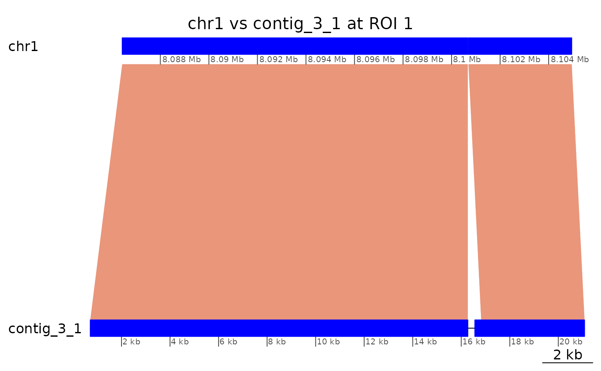
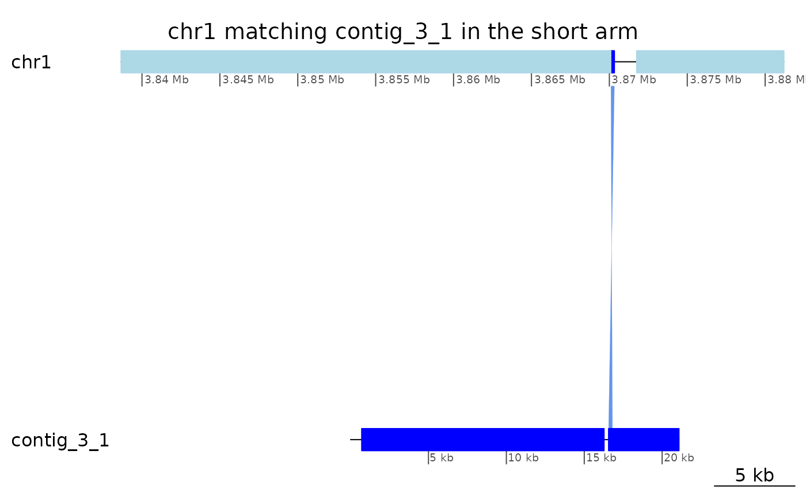
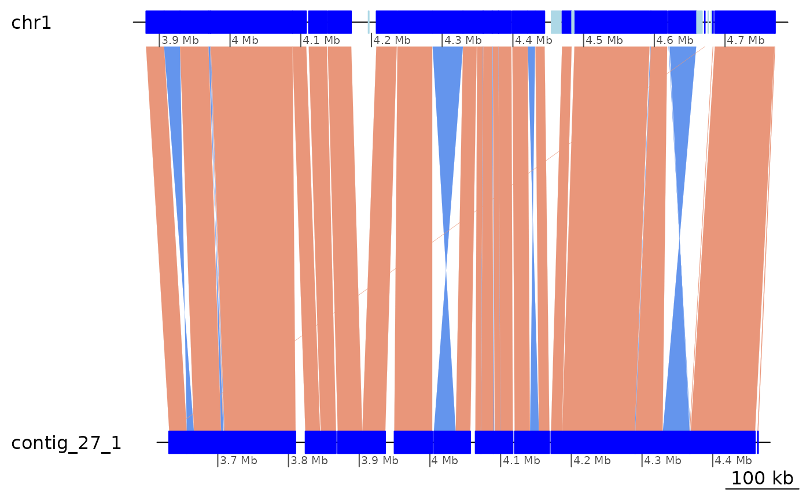
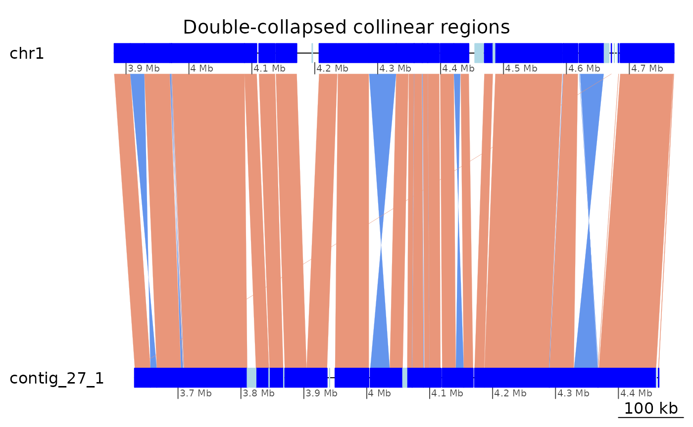
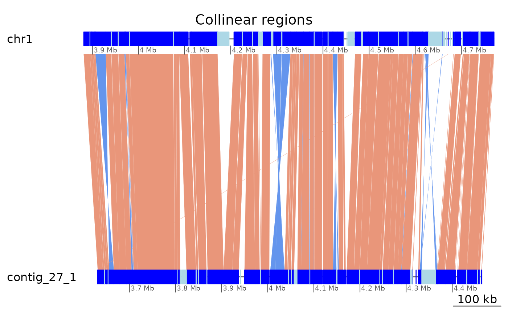
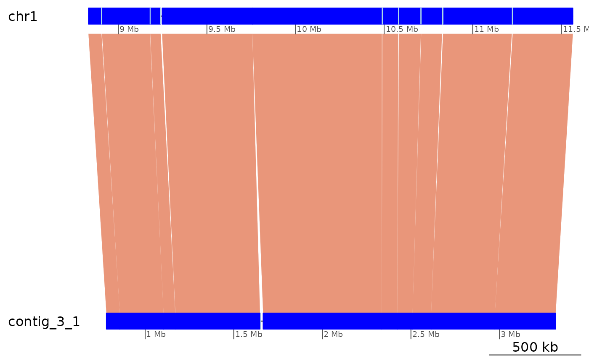

Regions interrupting colinearity
Charles Plessy
18 November, 2021
Source:vignettes/ColinearityInterruptors.Rmd
ColinearityInterruptors.RmdLoad pacakges and data
See the vignette("OikScrambling", package = "OikScrambling") for general details on package and data load.
See vignette("LoadGenomicBreaks", package = "OikScrambling") for how the different GBreaks objects are prepared.
suppressPackageStartupMessages({
library('GenomicBreaks')
library('ggplot2')
library("BreakpointsData")
})
genomes <- OikScrambling:::loadAllGenomes()## Loading required package: BSgenome## Loading required package: Biostrings## Loading required package: XVector##
## Attaching package: 'Biostrings'## The following object is masked from 'package:base':
##
## strsplit## Loading required package: rtracklayer## Warning in runHook(".onLoad", env, package.lib, package): strings not
## representable in native encoding will be translated to UTF-8
## Warning in runHook(".onLoad", env, package.lib, package): strings not
## representable in native encoding will be translated to UTF-8
load("BreakPoints.Rdata")
reps <- OikScrambling:::loadAllRepeats()
transcripts <- OikScrambling:::loadAllTranscriptsGR()The problem:
The plot below shows high colinearity between Oki and Kum, but the GenomicBreaks objects are still scattered in small pieces. What is interrupting colinearity?
plotApairOfChrs(coa$Oki_Kum, "chr1", main = "Oki – Kum")
In this vignette, we look at a couple of example regions in details. These regions helped me to decide how to process the data in Load Genomic Breaks (vignette("LoadGenomicBreaks", package = "OikScrambling") and to decide which analysis to prioritise elsewhere.
Alignments are real (Region of Interest 1)
# The best Kume contig matching ot chr1 is contig_3_1
bestMatch <- function(gb)
tapply(width(gb$query), seqnames(gb$query), sum) |> sort() |> tail(1) |> names()
coa$Oki_Kum |> plyranges::filter(seqnames == "chr1") |> bestMatch()## [1] "contig_3_1"
# contig_3_1 appears to map roughly in the 8,000,000 – 13,000,000 region
coa$Oki_Kum |> flagAll() |> plyranges::filter(seqnames(query) == "contig_3_1") |>
plyranges::arrange(start(query))## GBreaks object with 303 ranges and 6 metadata columns:
## seqnames ranges strand | query
## <Rle> <IRanges> <Rle> | <GRanges>
## [1] chr1 8086429-8100669 + | contig_3_1:714-16270
## [2] chr1 3870099-3870324 - | contig_3_1:16561-16812
## [3] chr1 8100696-8104950 + | contig_3_1:16822-21079
## [4] chr1 8106235-8126929 + | contig_3_1:21198-40210
## [5] PAR 9620326-9621010 - | contig_3_1:40220-40912
## ... ... ... ... . ...
## [299] chr1 12792338-12796149 + | contig_3_1:4603103-4606912
## [300] chr1 12799027-12831934 + | contig_3_1:4606913-4641495
## [301] chr1 12833633-12852708 + | contig_3_1:4641498-4657954
## [302] chr1 12866392-12879379 + | contig_3_1:4657955-4669933
## [303] chr1 12881855-12897271 + | contig_3_1:4669935-4684841
## score Arm rep transcripts
## <integer> <factor> <CharacterList> <Rle>
## [1] 14241 long tandem g2146.t1
## [2] 226 short rnd <NA>
## [3] 4255 long rnd,tandem g2151.t1;g2152.t1;g2..
## [4] 20695 long rnd,unknown g2153.t1;g2157.t1;g2..
## [5] 685 long unknown <NA>
## ... ... ... ... ...
## [299] 3812 long <NA> <NA>
## [300] 32908 long LowComplexity,unknown,rnd,... g3507.t1;g3511.t2;g3..
## [301] 19076 long tandem,rnd g3513.t1;g3515.t1
## [302] 12988 long unknown,tandem,rnd <NA>
## [303] 15417 long tandem,LowComplexity,rnd g3531.t1;g3532.t1;g3..
## flag
## <character>
## [1] <NA>
## [2] <NA>
## [3] Tra
## [4] <NA>
## [5] <NA>
## ... ...
## [299] <NA>
## [300] Tra
## [301] Tra
## [302] Tra
## [303] <NA>
## -------
## seqinfo: 19 sequences from OKI2018_I69 genomeHow about the second alignment pair, mapping 226 bases of contig_3_1 to the short arm?
ROI1 <- coa$Oki_Kum |>
plyranges::filter(seqnames(query) == "contig_3_1", end(query) <= 21079) |>
plyranges::arrange(start(query))
ROI1## GBreaks object with 3 ranges and 6 metadata columns:
## seqnames ranges strand | query score
## <Rle> <IRanges> <Rle> | <GRanges> <integer>
## [1] chr1 8086429-8100669 + | contig_3_1:714-16270 14241
## [2] chr1 3870099-3870324 - | contig_3_1:16561-16812 226
## [3] chr1 8100696-8104950 + | contig_3_1:16822-21079 4255
## Arm rep transcripts flag
## <factor> <CharacterList> <Rle> <character>
## [1] long tandem g2146.t1 <NA>
## [2] short rnd <NA> <NA>
## [3] long rnd,tandem g2151.t1;g2152.t1;g2.. Tra
## -------
## seqinfo: 19 sequences from OKI2018_I69 genome
coa$Oki_Kum |> plotApairOfChrs("chr1", "contig_3_1", xlim = gb2xlim(ROI1[-2]), main = "chr1 vs contig_3_1 at ROI 1")
coa$Oki_Kum |> plotApairOfChrs("chr1", "contig_3_1", xlim = list(c(3838658, 3881203), c(1, 21079)), main = "chr1 matching contig_3_1 in the short arm")
Is the alignment convincing ?
# Good match where reported
pairwiseAlignment(getSeq(genomes$Kum, GRanges("contig_3_1:16561-16812:-")), genomes$Oki$chr1[3870099:3870324], type="local")## Local PairwiseAlignmentsSingleSubject (1 of 1)
## pattern: [1] GGGGGCTGACCACTTTGACCAGTGTGTAATAT...GGGTTATTATATATCCTGAAGGGAGAAGGTCA
## subject: [1] GGGGGCTGACCACTTTGACCAGTGTGTAATAT...GGGTTATTATATATCCTGAAGGGAGAAGGTCA
## score: 344.5798
pairwiseAlignment(getSeq(genomes$Kum, GRanges("contig_3_1:16561-16812:-") + 50), genomes$Oki$chr1[(3870099 -50):(3870324 + 50)], type="global") |> writePairwiseAlignments()## ########################################
## # Program: Biostrings (version 2.60.2), a Bioconductor package
## # Rundate: Thu Nov 18 11:23:33 2021
## ########################################
## #=======================================
## #
## # Aligned_sequences: 2
## # 1: P1
## # 2: S1
## # Matrix: NA
## # Gap_penalty: 14.0
## # Extend_penalty: 4.0
## #
## # Length: 358
## # Identity: 279/358 (77.9%)
## # Similarity: NA/358 (NA%)
## # Gaps: 38/358 (10.6%)
## # Score: 9.03894
## #
## #
## #=======================================
##
## P1 1 GCAAAG---GTTACGAAAAATTTGCACACTCATCATTATGAGCCTTCATT 47
## || | ||| || | || | | || ||||| | |||| || ||
## S1 1 GCCCCGTTCGTTCCGCAGAAGTAAGAGAC-CATCACT-TGAG--TTGGTT 46
##
## P1 48 TTT-GGGGGCTGACCACTTTGACCAGTGTGTAATATGGGCAATGCTAAGC 96
## ||||||||||||||||||||||||||||||||||||||||||||||
## S1 47 CGAAGGGGGCTGACCACTTTGACCAGTGTGTAATATGGGCAATGCTAAGC 96
##
## P1 97 GCTAATCCTTTGAGATCCGATAAATACGCAATGGGCTCCCACGGTGCATC 146
## ||||||||||||||||||||||||||||||||||||||||| ||||||||
## S1 97 GCTAATCCTTTGAGATCCGATAAATACGCAATGGGCTCCCAAGGTGCATC 146
##
## P1 147 TT-CCGATAAAATTGACAAATGATAATTTCAGAAAAAATTCAGAATTATA 195
## || |||||||||||||||||||||||||| | |||||||||||||| |||
## S1 147 TTGCCGATAAAATTGACAAATGATAATTTTA-AAAAAATTCAGAATAATA 195
##
## P1 196 CTAAAAAAATAAGTATAACTATTGAAAGAAAGGGGTTATTATATATCCTG 245
## |||||||| |||||||||||||||||||||||||||||||||||||||||
## S1 196 CTAAAAAA-TAAGTATAACTATTGAAAGAAAGGGGTTATTATATATCCTG 244
##
## P1 246 AAGGGAGAAGGTCATTTATGAGAGAAGGTTAATTTATCACTGATAAATTA 295
## |||||||||||||| | || ||||||||| ||||||| |
## S1 245 AAGGGAGAAGGTCACTGAT-----------AATTTATCAGTGATAAAGCA 283
##
## P1 296 TCAGTGACCTTAT-TATAGAGGGCTTCTCCCTGGCCCGACTCGACTCGAC 344
## | | ||| || | | | | ||| | ||| ||| |
## S1 284 CC-GAAACCAGATATTTTTA-----TTTCCGTT-----ACTT---TCGTC 319
##
## P1 345 GCAACGCT 352
## ||| |
## S1 320 -CAATCCC 326
##
##
## #---------------------------------------
## #---------------------------------------
# No good match between the flanking pairs.
pairwiseAlignment(getSeq(genomes$Kum, GRanges("contig_3_1:16561-16812:+")), genomes$Oki$chr1[8086429:8104950], type="local")## Local PairwiseAlignmentsSingleSubject (1 of 1)
## pattern: [113] TTCTGAATTTTTTCTG
## subject: [11595] TTCTGGATTTTTTCTG
## score: 23.82705
pairwiseAlignment(getSeq(genomes$Kum, GRanges("contig_3_1:16561-16812:-")), genomes$Oki$chr1[8086429:8104950], type="local")## Local PairwiseAlignmentsSingleSubject (1 of 1)
## pattern: [221] AGGTTAATTTA
## subject: [1978] AGGTTAATTTA
## score: 21.79932Yes, the alignment looks real!
Colinearity interrupted by inversions and translocations (Region of Interest 2)
Let’s look at the area chr1:8080000-12900000 covered by contig_3_1. Can we coalesce it once we only keep the paired matches? The answer is no…
## GBreaks object with 303 ranges and 6 metadata columns:
## seqnames ranges strand | query
## <Rle> <IRanges> <Rle> | <GRanges>
## [1] chr1 8086429-8100669 + | contig_3_1:714-16270
## [2] chr1 8100696-8104950 + | contig_3_1:16822-21079
## [3] chr1 8105493-8106187 - | contig_29_1:1884094-1884784
## [4] chr1 8106235-8126929 + | contig_3_1:21198-40210
## [5] chr1 8126930-8192136 + | contig_3_1:40913-120953
## ... ... ... ... . ...
## [299] chr1 12852734-12866391 + | contig_82_1:2309881-2322607
## [300] chr1 12866392-12879379 + | contig_3_1:4657955-4669933
## [301] chr1 12880951-12881290 + | contig_27_1:4164345-4164661
## [302] chr1 12881855-12897271 + | contig_3_1:4669935-4684841
## [303] chr1 12897273-12899763 - | contig_88_1:1125832-1128287
## score Arm rep transcripts
## <integer> <factor> <CharacterList> <Rle>
## [1] 14241 long tandem g2146.t1
## [2] 4255 long rnd,tandem g2151.t1;g2152.t1;g2..
## [3] 695 long <NA> <NA>
## [4] 20695 long rnd,unknown g2153.t1;g2157.t1;g2..
## [5] 65207 long LowComplexity,tandem g2160.t1;g2161.t1;g2..
## ... ... ... ... ...
## [299] 13658 long unknown,tandem g3518.t1;g3519.t1;g3..
## [300] 12988 long unknown,tandem,rnd <NA>
## [301] 340 long <NA> <NA>
## [302] 15417 long tandem,LowComplexity,rnd g3531.t1;g3532.t1;g3..
## [303] 2491 long <NA> <NA>
## flag
## <character>
## [1] <NA>
## [2] Tra
## [3] <NA>
## [4] <NA>
## [5] <NA>
## ... ...
## [299] <NA>
## [300] Tra
## [301] <NA>
## [302] <NA>
## [303] Tra
## -------
## seqinfo: 19 sequences from OKI2018_I69 genome
# Even removing all but the best match on the query is not enough to collapse all
coa$Oki_Kum |>
plyranges::filter(seqnames == "chr1", start > 8080000, end < 12900000) |>
plyranges::filter(seqnames(query) == "contig_3_1") |>
coalesce_contigs() |> flagAll() |> head(10)## GBreaks object with 10 ranges and 3 metadata columns:
## seqnames ranges strand | query score
## <Rle> <IRanges> <Rle> | <GRanges> <integer>
## [1] chr1 8086429-8483438 + | contig_3_1:714-425640 397010
## [2] chr1 8485418-8487388 - | contig_3_1:428514-429368 1971
## [3] chr1 8489327-8883052 + | contig_3_1:432370-835845 393726
## [4] chr1 8883053-8945740 + | contig_3_1:836919-893789 62688
## [5] chr1 8953814-8955498 + | contig_3_1:905043-906751 1685
## [6] chr1 8957904-8966137 + | contig_3_1:896965-905042 8234
## [7] chr1 8967756-9470136 + | contig_3_1:906754-1383986 502381
## [8] chr1 9470145-9470890 - | contig_3_1:3260388-3261159 746
## [9] chr1 9470891-9891134 + | contig_3_1:1383987-1808624 420244
## [10] chr1 9891445-9891819 - | contig_3_1:1808635-1809010 375
## flag
## <character>
## [1] Inv
## [2] <NA>
## [3] <NA>
## [4] Tra
## [5] Tra
## [6] <NA>
## [7] Tra
## [8] <NA>
## [9] Inv
## [10] <NA>
## -------
## seqinfo: 19 sequences from OKI2018_I69 genome
coa$Oki_Kum |>
plyranges::filter(seqnames == "chr1", start > 8080000, end < 12900000) |>
plyranges::filter(seqnames(query) == "contig_3_1")|>
plotApairOfChrs()
Colinearity appears to be interrupted by many inversions and translocations.
Well-aligned repeats are kept in the one-to-one graph (Region of interest 3)
gbs$Oki_Kum[1] |> as.data.frame()## seqnames start end width strand score query.seqnames query.start query.end
## 1 chr1 7785 15657 7873 + 43650 contig_10_1 52244 60120
## query.width query.strand query.rep query.transcripts Arm rep transcripts
## 1 7877 * rnd <NA> short rnd <NA>
## flag
## 1 <NA>
pairwiseAlignment(genomes$Kum$contig_10_1[52244:60120], genomes$Oki$chr1[7785:15657], type="global")## Global PairwiseAlignmentsSingleSubject (1 of 1)
## pattern: TAATATCGATACTGCAGAAGAACATAAAAAATAA...AGATTAGCTTAGAGAATCATCCTTATCGGTATCA
## subject: TAATATCGATACTGCAGAAGAACATAAAAAATAA...AGATTAGCTTAGAGAATCATCCTTATCGGTATCA
## score: 14961.67
subsetByOverlaps(reps$Oki, gbs$Oki_Kum[1])## GRanges object with 5 ranges and 6 metadata columns:
## seqnames ranges strand | source type score phase
## <Rle> <IRanges> <Rle> | <factor> <factor> <numeric> <integer>
## [1] chr1 7783-7893 + | RepeatMasker similarity 16.8 <NA>
## [2] chr1 8181-13174 + | RepeatMasker similarity 25.6 <NA>
## [3] chr1 13538-13669 + | RepeatMasker similarity 22.0 <NA>
## [4] chr1 13971-14841 + | RepeatMasker similarity 22.2 <NA>
## [5] chr1 15005-15638 + | RepeatMasker similarity 18.2 <NA>
## Target Class
## <character> <factor>
## [1] Motif:rnd-1_family-1.. rnd
## [2] Motif:rnd-1_family-1.. rnd
## [3] Motif:rnd-1_family-3.. rnd
## [4] Motif:rnd-1_family-1.. rnd
## [5] Motif:rnd-1_family-2.. rnd
## -------
## seqinfo: 19 sequences from an unspecified genome; no seqlengthsUnaligned mapped region: ROI4
Let’s check examples of unaligned mapped regions in function of presence of repeats.
FALSE/TRUE
unalMap$Oki_Osa -> x
x$Class <- paste(!sapply(x$rep, anyNA), !sapply(x$query$rep, anyNA))
x |> head() |> as.data.frame()## seqnames start end width strand query.seqnames query.start query.end
## 1 chr1 552335 552383 49 * Chr1 1730795 1731145
## 2 chr1 552647 552907 261 * Chr1 1730115 1730510
## 3 chr1 553834 553873 40 * Chr1 1728809 1729169
## 4 chr1 554134 554168 35 * Chr1 1728321 1728530
## 5 chr1 554365 554546 182 * Chr1 1727927 1728109
## 6 chr1 554692 555191 500 * Chr1 1727331 1727781
## query.width query.strand query.rep query.transcripts Arm rep transcripts
## 1 351 * rnd <NA> short NA g56.t1
## 2 396 * tandem <NA> short NA <NA>
## 3 361 * NA g385.t1 short NA <NA>
## 4 210 * NA g385.t1 short NA <NA>
## 5 183 * NA g384.t1 short NA <NA>
## 6 451 * NA g384.t1 short rnd <NA>
## flag Class
## 1 <NA> FALSE TRUE
## 2 <NA> FALSE TRUE
## 3 <NA> FALSE FALSE
## 4 <NA> FALSE FALSE
## 5 <NA> FALSE FALSE
## 6 <NA> TRUE FALSE
ROI4_1 <- x[1]
# Let's recover the flanking regions
# (it works because the unalMap regions are expanded of 1 base on each side to avoid zero-length ranges)
gbs$Oki_Osa |> subsetByOverlaps(ROI4_1) |> as.data.frame()## seqnames start end width strand score query.seqnames query.start
## 1 chr1 551988 552335 348 - 680 Chr1 1731145
## 2 chr1 552383 552647 265 - 416 Chr1 1730510
## query.end query.width query.strand query.rep query.transcripts Arm rep
## 1 1731548 404 * NA <NA> short NA
## 2 1730795 286 * rnd <NA> short NA
## transcripts flag
## 1 g56.t1 Col
## 2 g56.t1 Col
gbs$Oki_Osa |> subsetByOverlaps(ROI4_1) |> range()## GBreaks object with 1 range and 1 metadata column:
## seqnames ranges strand | query
## <Rle> <IRanges> <Rle> | <GRanges>
## [1] chr1 551988-552647 * | Chr1:1730510-1731548
## -------
## seqinfo: 19 sequences from OKI2018_I69 genome
# We confirm that unalmap regions can not be mapped
pairwiseAlignment(genomes$Oki$chr1[552335:552383], genomes$Osa$Chr1[1730795:1731145], type="global") |> writePairwiseAlignments()## ########################################
## # Program: Biostrings (version 2.60.2), a Bioconductor package
## # Rundate: Thu Nov 18 11:23:46 2021
## ########################################
## #=======================================
## #
## # Aligned_sequences: 2
## # 1: P1
## # 2: S1
## # Matrix: NA
## # Gap_penalty: 14.0
## # Extend_penalty: 4.0
## #
## # Length: 351
## # Identity: 44/351 (12.5%)
## # Similarity: NA/351 (NA%)
## # Gaps: 302/351 (86.0%)
## # Score: -1250.299
## #
## #
## #=======================================
##
## P1 1 TT------------TCCTCC------------------------------ 8
## || || | |
## S1 1 TTAGTTCAGTTAACTCATGCGGGGAAAGTAGCCAATAAGTTGTAAATTTT 50
##
## P1 9 -------------------------------------------------- 8
##
## S1 51 CATTTACCTTAAAATGGCTGGAACGTAGCGAAACTAAAAACGCGAAGCGA 100
##
## P1 9 -------------------------------------------------- 8
##
## S1 101 AGCTTCGAGCCAAAAATAAAAATATGAGACATTTTGAGGCGAAGCTTCGC 150
##
## P1 9 ---------TTGATT----------------------------------- 14
## ||||||
## S1 151 TTCACGCTTTTGATTGGTTGAGTGTGGCGAAGCTAAAAACGCGAAGCAAA 200
##
## P1 15 -----------TCAATTTT-------------------CGA--------- 25
## | |||||| |||
## S1 201 GCTAATTTTCATTAATTTTGACGGGAGGCTTCGTTTTGCGATTTTAGCTT 250
##
## P1 26 ---------CA----TTTTT-----------GAAGA-------------- 37
## || ||||| |||||
## S1 251 CGCTACGCTCAGATGTTTTTAGCGAATTTGAGAAGACAACATTTTAGTCA 300
##
## P1 38 -------------------------------ATC-TATT-------TGGT 48
## ||| |||| | |
## S1 301 CTTTACCCGCAGGGGTTTAGTTTTAATGATTATCATATTAACTGCATACT 350
##
## P1 49 A 49
## |
## S1 351 A 351
##
##
## #---------------------------------------
## #---------------------------------------
pairwiseAlignment(genomes$Oki$chr1[552335:552383], genomes$Osa$Chr1[1730795:1731145] |> reverseComplement(), type="global") |> writePairwiseAlignments()## ########################################
## # Program: Biostrings (version 2.60.2), a Bioconductor package
## # Rundate: Thu Nov 18 11:23:46 2021
## ########################################
## #=======================================
## #
## # Aligned_sequences: 2
## # 1: P1
## # 2: S1
## # Matrix: NA
## # Gap_penalty: 14.0
## # Extend_penalty: 4.0
## #
## # Length: 351
## # Identity: 42/351 (12.0%)
## # Similarity: NA/351 (NA%)
## # Gaps: 302/351 (86.0%)
## # Score: -1256.061
## #
## #
## #=======================================
##
## P1 1 T---------TT-------------------------------------- 3
## | ||
## S1 1 TAGTATGCAGTTAATATGATAATCATTAAAACTAAACCCCTGCGGGTAAA 50
##
## P1 4 -------------------------------------------------- 3
##
## S1 51 GTGACTAAAATGTTGTCTTCTCAAATTCGCTAAAAACATCTGAGCGTAGC 100
##
## P1 4 -----------------------CCTCC---------------------- 8
## |||||
## S1 101 GAAGCTAAAATCGCAAAACGAAGCCTCCCGTCAAAATTAATGAAAATTAG 150
##
## P1 9 --TTG--------------------------------------------- 11
## |||
## S1 151 CTTTGCTTCGCGTTTTTAGCTTCGCCACACTCAACCAATCAAAAGCGTGA 200
##
## P1 12 ----------------------------ATTTCAATTTT-----CGA--- 25
## |||| ||||| |||
## S1 201 AGCGAAGCTTCGCCTCAAAATGTCTCATATTTTTATTTTTGGCTCGAAGC 250
##
## P1 26 -----------------------------------CATTTT--------T 32
## |||||| |
## S1 251 TTCGCTTCGCGTTTTTAGTTTCGCTACGTTCCAGCCATTTTAAGGTAAAT 300
##
## P1 33 GAAG------AATCTATTTGGTA--------------------------- 49
## ||| || |||| | ||
## S1 301 GAAAATTTACAACTTATTGGCTACTTTCCCCGCATGAGTTAACTGAACTA 350
##
## P1 50 - 49
##
## S1 351 A 351
##
##
## #---------------------------------------
## #---------------------------------------
# We confirm that flanking regions map well
pairwiseAlignment(genomes$Oki$chr1[551988:552647], genomes$Osa$Chr1[1730510:1731548] |> reverseComplement(), type="global") |> writePairwiseAlignments()## ########################################
## # Program: Biostrings (version 2.60.2), a Bioconductor package
## # Rundate: Thu Nov 18 11:23:47 2021
## ########################################
## #=======================================
## #
## # Aligned_sequences: 2
## # 1: P1
## # 2: S1
## # Matrix: NA
## # Gap_penalty: 14.0
## # Extend_penalty: 4.0
## #
## # Length: 1040
## # Identity: 510/1040 (49.0%)
## # Similarity: NA/1040 (NA%)
## # Gaps: 381/1040 (36.6%)
## # Score: -1752.284
## #
## #
## #=======================================
##
## P1 1 TAAGATTTTATAAGTCCGTTATTCA-------------ATAAAATTCATT 37
## ||| |||||| || ||| ||||| |||||||| |
## S1 1 TAAAATTTTAGAAATCCATTATTTTTTTTTGAAGTTTGATAAAATTAAAA 50
##
## P1 38 TATTTCCTACTGTACAGGCGTGGCAAAACGTCTTCTTAGCGCATTGTCCA 87
## |||||| ||||| || ||||| |||||||| |||||||| |||
## S1 51 ATACAACTACTGAACAGGAGTAGCAAATCGTCTTCTGAGCGCATTATCCG 100
##
## P1 88 TCGTATTTTTCTTGTCGAT-CTTGAAGCTATCCGAGTTCTCCTGGAACTT 136
## |||| ||||| ||| || || | | || |||| ||| || || ||
## S1 101 TCGTGCTTTTCCCGTCAATTCTAGTA-CTCTCCGCGTTTTCTTGAAATCG 149
##
## P1 137 GTGAATGATCGCTGGGACAGGCAAAGCAAAGCATAACACGCCAGTTAGCG 186
## ||||| ||||| || || |||| ||||||| || ||||| | ||||
## S1 150 ATGAATAATCGCCGGAACTGGCAGCGCAAAGCTCAAAACGCCGCTCAGCG 199
##
## P1 187 CACAGAAACAGCTAGAAATG---GTT------TTGCGAAATCAGCGGCCG 227
## | ||| | |||||| |||| ||| |||| ||||||| |||||
## S1 200 CGCAGCAGCAGCTAAAAATCAAAGTTAGATTCTTGCAAAATCAGTGGCCG 249
##
## P1 228 CA------GCGACAA-ATGG-------------ATTAA------------ 245
## | || | || ||| |||||
## S1 250 CGAAACATGCAAGAACATGTTTTGCTAAATCGAATTAAAACTAGAATTTC 299
##
## P1 246 --CTCACCCAATTACGCGACCGCCAGGGGTTGTCGGGTAAATGTCCCCGT 293
## || |||| | || |||||||| | |||||||| |||| || ||||
## S1 300 TGCTGACCCGACTATTCGACCGCCGGCAGTTGTCGGATAAAGATCGCCGT 349
##
## P1 294 AGCCGATTGTAGACATTGTTACGATCGCCCACCAAATTCCGTCT--AAAA 341
## |||| |||||||||||||||| ||| |||||||||||||| ||| ||||
## S1 350 AGCCAATTGTAGACATTGTTATGATTGCCCACCAAATTCCATCTTCAAAA 399
##
## P1 342 A---------GCAGTT-------------TT-----------CCTCC--- 355
## | |||||| || ||| |
## S1 400 AAGTTAGTATGCAGTTAATATGATAATCATTAAAACTAAACCCCTGCGGG 449
##
## P1 356 ----------------TTGATTTC---AATT------------------- 367
## ||| ||| ||||
## S1 450 TAAAGTGACTAAAATGTTGTCTTCTCAAATTCGCTAAAAACATCTGAGCG 499
##
## P1 368 ---------------------------------TTCGACATTTTTGAAGA 384
## || | ||| |||| |
## S1 500 TAGCGAAGCTAAAATCGCAAAACGAAGCCTCCCGTCAAAATTAATGAAAA 549
##
## P1 385 ATCTATTTGGTACCTG---------------------------------- 400
## | |||| | | |
## S1 550 TTAGCTTTGCTTCGCGTTTTTAGCTTCGCCACACTCAACCAATCAAAAGC 599
##
## P1 401 --GAATTGAAG---------AAAATTTATCAT---------------TCG 424
## ||| |||| ||||| | |||| |||
## S1 600 GTGAAGCGAAGCTTCGCCTCAAAATGTCTCATATTTTTATTTTTGGCTCG 649
##
## P1 425 -----TCGCAT-----------TTTCG-------------------AGCT 439
## |||| | ||||| || |
## S1 650 AAGCTTCGCTTCGCGTTTTTAGTTTCGCTACGTTCCAGCCATTTTAAGGT 699
##
## P1 440 AAAAAACAA---ACA--TTTTT---------------------------- 456
## ||| | || ||| || ||
## S1 700 AAATGAAAATTTACAACTTATTGGCTACTTTCCCCGCATGAGTTAACTGA 749
##
## P1 457 ---------GAAGAC------------CATTAGTCGAA----------GA 475
## ||| || |||| || | | ||
## S1 750 ACTAACCCGGAATACAGCTAAATTTTTCATTCGTTGCATTTTCGAGCTGA 799
##
## P1 476 ATG----------CTC-----AAAAC-------GCATACCTGGTAAATTA 503
## || ||| |||| | ||||||| ||||| |
## S1 800 ATCACTTTTGAACCTCTTTAGAAAATATTTCTAGAATACCTGATAAATAA 849
##
## P1 504 CGGAGCCGTAAAATATGCCGGAAATGGAGAGAAGAATGAGCAGAAATGAG 553
## | ||||| ||||||||||| ||||||| ||||||||| |||| ||| |||
## S1 850 CAGAGCCATAAAATATGCCAGAAATGGCGAGAAGAATCAGCAAAAACGAG 899
##
## P1 554 ATCT---AAAAGT--------CTTCAAAGAGCAC--TTT---ATAAG-GT 586
## |||| |||||| ||| || || || ||||| |
## S1 900 ATCTGAAAAAAGTAATTTGCGCTTTGAACCGCCGCGATTCCGATAAGCGG 949
##
## P1 587 CGA----------------TTTGAGCTTACTTCTCTGGTACTATCAGCCA 620
## | | || || | || || | || || || |||
## S1 950 CCACAGCGGAACGGCAAAATTAGAACAAACCTCGCGAGTGCTTTCGCCCA 999
##
## P1 621 TCGTTTTTAGCATTTGGCAAAGAGACTCATTTTTCTTGCT 660
## ||||||| | ||| || || |||||||| || || |||||
## S1 1000 TCGTTTTGATCATGTGACACAGAGACTCGTTGTTTTTGCT 1039
##
##
## #---------------------------------------
## #---------------------------------------
# Only one hit
#vmatchPattern(genomes$Osa$Chr1[1730795:1731145], genomes$Osa, with.indels = TRUE, max.mismatch = 10)FALSE/FALSE
ROI4_2 <- x[5]
# As character for convenience of BLAST searching.
genomes$Oki$chr1[554365:554546] |> as.character() # Only one perfect BLAST hit at the NCBI, to the Oki genome.## [1] "AAAAGGCTGCTCTAGAATTTTTGATCAAGCGGCAATTATCATTTGCTTGAATTTTATGCCAAAACTTCCTTCTTTGCATTTCGCCGAAAACACTGATAAGAAACGTTTTCGGCAAAAGCGGAAAGTGTCAACTTCCGCGAAAGGCGCCGTTCAATTTTCTAGTGCCTTTTCGAGCCCATTAA"
genomes$Osa$Chr1[1727927:1728109] |> as.character() # No relevant BLAST hit at the NCBI (evalues >= 1e-4)## [1] "TCTCAGGATCGACATGCTTCTTAGAAACCACTGATTTTTCGAAGAAAGGTGCGAAATTTTAAGATCAAGAAAAATCTTAAATTCAACAATTTTTTTTGAAAATGGAAAAAAAAATTTTTGTCACAGCGCGATTGAACGCTAACCCTTCCCATTTCTTCAATCTTTTTCCGATACGAAGCATGT"
vmatchPattern(genomes$Oki$chr1[554365:554546], genomes$Oki)## GRanges object with 1 range and 0 metadata columns:
## seqnames ranges strand
## <Rle> <IRanges> <Rle>
## [1] chr1 554365-554546 +
## -------
## seqinfo: 19 sequences from OKI2018_I69 genome
# unaligned mapped region (+ / -)
pairwiseAlignment(genomes$Oki$chr1[554365:554546], genomes$Osa$Chr1[1727927:1728109] , type="global") |> writePairwiseAlignments()## ########################################
## # Program: Biostrings (version 2.60.2), a Bioconductor package
## # Rundate: Thu Nov 18 11:23:48 2021
## ########################################
## #=======================================
## #
## # Aligned_sequences: 2
## # 1: P1
## # 2: S1
## # Matrix: NA
## # Gap_penalty: 14.0
## # Extend_penalty: 4.0
## #
## # Length: 201
## # Identity: 96/201 (47.8%)
## # Similarity: NA/201 (NA%)
## # Gaps: 37/201 (18.4%)
## # Score: -488.9035
## #
## #
## #=======================================
##
## P1 1 AAA-AGGCTGCTCTAGAATTTTTGATCAAGCGGCAATTATC------ATT 43
## ||| | | | | || || | | | || || |
## S1 1 TCTCAGGATCGACATGCTTCTTAGAAACCACTG-ATTTTTCGAAGAAAGG 49
##
## P1 44 TGCTTGAATTTTATG--CCAAAACTTCCTTCTTTGCA-----TTTCGCCG 86
## ||| ||||||| | | | || ||| | || ||| |
## S1 50 TGCGA-AATTTTAAGATCAAGAAAAATCTTAAATTCAACAATTTTTTTTG 98
##
## P1 87 AAAACACTGATAAGAAACGTTTTCGGCAAAAGCGGAAAGTGTCAACTTCC 136
## |||| || || ||| |||| | || | ||| | | |||
## S1 99 AAAA---TGGAAAAAAAAATTTTTGTCACA-GCGCGAT---TGAAC---- 137
##
## P1 137 GCGAAAGGCGCCGTTCAATTTTCT--AGTGCCTTTTCGAGCCCAT---TA 181
## || || || ||| ||||| | | ||| ||| | | |
## S1 138 GCTAA-----CCCTTCCCATTTCTTCAATCTTTTTCCGATACGAAGCATG 182
##
## P1 182 A 182
##
## S1 183 T 183
##
##
## #---------------------------------------
## #---------------------------------------
pairwiseAlignment(genomes$Oki$chr1[554365:554546], genomes$Osa$Chr1[1727927:1728109] |> reverseComplement(), type="global") |> writePairwiseAlignments()## ########################################
## # Program: Biostrings (version 2.60.2), a Bioconductor package
## # Rundate: Thu Nov 18 11:23:48 2021
## ########################################
## #=======================================
## #
## # Aligned_sequences: 2
## # 1: P1
## # 2: S1
## # Matrix: NA
## # Gap_penalty: 14.0
## # Extend_penalty: 4.0
## #
## # Length: 196
## # Identity: 104/196 (53.1%)
## # Similarity: NA/196 (NA%)
## # Gaps: 27/196 (13.8%)
## # Score: -425.3516
## #
## #
## #=======================================
##
## P1 1 AAAAGGCTGCTCTAG---AATTTTTGATCAAGCGGCAA---TTATCATTT 44
## | | | | | | | || |||| || || || ||| | ||
## S1 1 ACATGCTTCGTATCGGAAAAAGATTGAAGAAATGGGAAGGGTTAGCGTTC 50
##
## P1 45 GCTTGAATTTTATGCCAAAACTTCCTTCTTTGCATTTCGCCGAAAACACT 94
## | | | | | ||||| || || ||| ||||| | |||| | |
## S1 51 AATCGCGCTGT--GACAAAAATTTTTT-TTTCCATTTT-CAAAAAAAATT 96
##
## P1 95 GAT-AAGAAACGTTTTCGGCAAAAGCGGAAAGTGT--CAACTTCCG-CGA 140
## | | || | | ||| | | | ||| | | || ||| | |||
## S1 97 GTTGAATTTAAGATTTTT-CTTGATCTTAAAATTTCGCACCTTTCTTCGA 145
##
## P1 141 AAGGCGCCGTTCAAT--TTTCTA-GTGCCTTTTCGAGCCCATTA-A 182
## || ||| | |||||| | | | |||| || | | |
## S1 146 AAAA------TCAGTGGTTTCTAAGAAGCATGTCGATCC--TGAGA 183
##
##
## #---------------------------------------
## #---------------------------------------
# Identity of ~50% but no striking difference between strands
# unaligned mapped region with flanking colinear alignments.
gbs$Oki_Osa |> subsetByOverlaps(ROI4_2)## GBreaks object with 2 ranges and 6 metadata columns:
## seqnames ranges strand | score query Arm
## <Rle> <IRanges> <Rle> | <numeric> <GRanges> <factor>
## [1] chr1 554168-554365 - | 450 Chr1:1728109-1728321 short
## [2] chr1 554546-554692 - | 564 Chr1:1727781-1727927 short
## rep transcripts flag
## <CharacterList> <Rle> <character>
## [1] <NA> <NA> Col
## [2] <NA> <NA> Col
## -------
## seqinfo: 19 sequences from OKI2018_I69 genome
pairwiseAlignment(genomes$Oki$chr1[554168:554692], genomes$Osa$Chr1[1727781:1728321] |> reverseComplement(), type="global") |> writePairwiseAlignments()## ########################################
## # Program: Biostrings (version 2.60.2), a Bioconductor package
## # Rundate: Thu Nov 18 11:23:49 2021
## ########################################
## #=======================================
## #
## # Aligned_sequences: 2
## # 1: P1
## # 2: S1
## # Matrix: NA
## # Gap_penalty: 14.0
## # Extend_penalty: 4.0
## #
## # Length: 558
## # Identity: 395/558 (70.8%)
## # Similarity: NA/558 (NA%)
## # Gaps: 50/558 (9.0%)
## # Score: -303.8273
## #
## #
## #=======================================
##
## P1 1 TACCAATAAGCTTTCAGGCGCGCGTTGTAGATTTTTCTCTTGAGTTCTGA 50
## ||||||||| ||||| ||||| ||| | |||||||||||| |||||||
## S1 1 TACCAATAAACTTTCTGGCGCTTTTTGCAAATTTTTCTCTTGTGTTCTGA 50
##
## P1 51 AAAGAACCCCTCCGATCTCGAAATCGATCATAATTGGAACTTTGTTTTTT 100
## | | || ||||| || || ||||||| ||||||||||||| ||||| |
## S1 51 ATAAAATGCCTCCAATTTCAAAATCGACCATAATTGGAACTCTGTTTACT 100
##
## P1 101 ATTTTACGAATGCTCATCTTTT-------TATTTTTTCGAAAATGGAATT 143
## ||||| | |||||||| |||| ||||||||| | |||||||
## S1 101 ATTTTTTGGATGCTCATTTTTTATAAGAATATTTTTTC-AGCGTGGAATT 149
##
## P1 144 TTTTTTTG-CAG------AAGGAAGGTT-TGAATTTTTCATTTTTGGCGG 185
## ||| ||| ||||||| | ||||||||| ||| ||||||
## S1 150 TTTGCAGATCAGGAAAACAAGGAAGCTCGTGAATTTTTTATTCGTGGCGG 199
##
## P1 186 A-CAATGGGCTCAAAAAGGCTGCTCTAG---AATTTTTGATCAAGCGGCA 231
## | ||| ||||| | | | | | | | || |||| || || |
## S1 200 AACAAAAGGCTCGACATGCTTCGTATCGGAAAAAGATTGAAGAAATGGGA 249
##
## P1 232 A---TTATCATTTGCTTGAATTTTATGCCAAAACTTCCTTCTTTGCATTT 278
## | ||| | || | | | || ||||| || || ||| |||||
## S1 250 AGGGTTAGCGTTCAATCGC--GCTGTGACAAAAATTTTTT-TTTCCATTT 296
##
## P1 279 CGCCGAAAACACTGAT-AAGAAACGTTTTCGGCAAAAGCGGAAAGTGTC- 326
## | |||| | || | || | | ||| | | | ||| | ||
## S1 297 T-CAAAAAAAATTGTTGAATTTAAGATTTTT-CTTGATCTTAAAATTTCG 344
##
## P1 327 AAC--TTCCGCGAAAGGCGCCGTTCAAT--TTTCTA-GTGCCTTTTCGAG 371
## || ||| ||||| ||| | |||||| | | | ||||
## S1 345 CACCTTTCTTCGAAAAA------TCAGTGGTTTCTAAGAAGCATGTCGAT 388
##
## P1 372 CCCATTA-AGCTGCTGCAGCAGATGCATGGAACTACGTGTTTGACGACTT 420
## || | | |||| ||||||| || ||||||||||||| ||||||||||
## S1 389 CC--TGAGAGCTTGTGCAGCAAATACATGGAACTACGTAATTGACGACTT 436
##
## P1 421 TGAAAAAGGGATTTCGGCCGCTGCTTTGAGTCGC---GCTGGACCGCGGG 467
## |||||||||||||||||||| | ||| |||| |||||||||||||
## S1 437 TGAAAAAGGGATTTCGGCCGGT---TTGCGTCGATGAGCTGGACCGCGGG 483
##
## P1 468 GCGTCGCCTGATCCGCTTTCGTTGATCTTCGCATTGCTCGACAGTTTGCG 517
## ||||||||||||||||||||||||||||||||||||||||||||||||||
## S1 484 GCGTCGCCTGATCCGCTTTCGTTGATCTTCGCATTGCTCGACAGTTTGCG 533
##
## P1 518 CTCCATCT 525
## ||||||||
## S1 534 CTCCATCT 541
##
##
## #---------------------------------------
## #---------------------------------------TRUE/TRUE
ROI4_3 <- x[12]
ROI4_3 |> data.frame()## seqnames start end width strand query.seqnames query.start query.end
## 1 chr1 561646 562124 479 * Chr1 1722712 1723220
## query.width query.strand query.rep query.transcripts Arm rep
## 1 509 * rnd g383.t2;g383.t1;g383.t3 short tandem
## transcripts flag Class
## 1 g57.t3;g57.t1;g57.t2 <NA> TRUE TRUE
# As character for convenience of BLAST searching.
genomes$Oki$chr1[561646:562124] |> as.character() # Only one perfect BLAST hit at the NCBI, to the Oki genome.## [1] "TATCATAGCAATCGGTATTTTGGTAGAGATTAACGAGCGAAAAGGAACATCCAGTAGCTCTTCAGTCCCTTGAATCCTTCGTGAAATGTGGTTGTTGTTGTTCCTGACGAATTTGAAGTCGTTGTCTTAGTCGTTGTTGTTGTTGAACGTGTAGTGGTTTTTTTAGTGGTTGTTGTCGATGTCAATGATAATGTGGATGTTGTTGTTTTTGTTGTTTGCGTAGACATTGTTGTTGATGATTTTGAGGGTGCTGGCGTATTGGAAATAGAACTTGTCATCTGATAAGTCGACAGATTTGTCATGTCAGTCGTCAGGGATGATTCTGCCGTTGTTAGATTGTCAACACTCGGATCGAGATCTTCATTTTTTCCAAGGCAAAGAGGAATCGTGATTCCAAGAATTGTTACTATCACTGCAGAAACTTCATTTCACACCGAAATTGTTATTCAAATATAATTCTTAAATACCTAGCGCGAATC"
genomes$Osa$Chr1[1722712:1723220] |> as.character() # No relevant BLAST hit at the NCBI (evalues >= 1e-4)## [1] "GCTTGTTTATGAGTTAAAAAAAACTTTTTAATATATCTTTGCTTCAAAAGCTTGAATTAAGTTACGACGATTATTATTGTTATCCTCGGATGTATCCCGGTTTTTATCGAAAAAAACAATGAAATAACCACAAACTCGACAACAATGCCTGACTCAACAACAATTATCATCACTACAACGACTGTTCCTGACTTAATACTATTGAACGAAACTCTGACAACAACAACACTGACCTCGAAATCGAGCGCCACTTTGTCAACCACTACAAAAACTATTACAACCAACGCAACAACGACTTCCGCGACTACAACGACAACAACGAGTTCAACAACAACTACAACAACATCGACAACACCAACAACAACCGCGACCGGTTCTTCTACGACTACAACTCCAACCACAACATCAACAACATTGAACACAACGTCAACGACATCAACAACAACATCAAAATGTGTTCCATTTGACGAGTACGACGATATTTGTCCGTAATTTCTGGCAATTTGTCA"
# unaligned mapped region (+ / -)
pairwiseAlignment(genomes$Oki$chr1[561646:562124], genomes$Osa$Chr1[1722712:1723220] , type="global") |> writePairwiseAlignments()## ########################################
## # Program: Biostrings (version 2.60.2), a Bioconductor package
## # Rundate: Thu Nov 18 11:23:50 2021
## ########################################
## #=======================================
## #
## # Aligned_sequences: 2
## # 1: P1
## # 2: S1
## # Matrix: NA
## # Gap_penalty: 14.0
## # Extend_penalty: 4.0
## #
## # Length: 557
## # Identity: 230/557 (41.3%)
## # Similarity: NA/557 (NA%)
## # Gaps: 126/557 (22.6%)
## # Score: -1473.951
## #
## #
## #=======================================
##
## P1 1 TATCATAGCAATCGGTATTTTGGTAGAGATTAACGAGCGAAAAGGAACAT 50
## || ||| || | ||| |||| ||| |
## S1 1 -------GC----------TTG-------TTTATGAGTTAAAAAAAACTT 26
##
## P1 51 CCAG---TAGCT---CTTCAGTCCCTTGAATCCTTCGTGAAATGTGGTTG 94
## || || ||||| ||||||| | || | | ||
## S1 27 TTTAATATATCTTTGCTTCAAAAGCTTGAAT--TAAGTTACGAC-GATTA 73
##
## P1 95 TTGTTGTTCCTGACGAATTTGAAGTCGTTGTCTTAGTCGTTGTTGTTGTT 144
## || ||||| || || | || || || ||| |
## S1 74 TTATTGTTATCCTCGGATGTA---TCCCGGTTTTTATCGAAAAAAACAAT 120
##
## P1 145 GAA-----CGTGTAGTGGTTTTTTTAGTGGTTGTTGTCGATGTCAATGAT 189
## ||| | | | | | || || || | |||| ||
## S1 121 GAAATAACCACAAACTCGACAAC--AATGCCTGAC-TCAACAACAATTAT 167
##
## P1 190 AATGTGGA-------TGTTGTTGTTTTTGTTGTTTGCGTAGACATTGTTG 232
## || | |||| || || | | | || | | |
## S1 168 CATCACTACAACGACTGTTCCTGACTTAATACTATTGAACGAAACTCT-- 215
##
## P1 233 TTGATGATTTTGAGGGTGCTGGCGTATTGGAAATAGAACTTGTCATCTGA 282
## || | | || || | | || | |||||| |
## S1 216 --GACAACAACAACACTGACCTCGAAATCGAGCGCCACTTTGTCAACCAC 263
##
## P1 283 TAAGTCGACAGATTTGTCATGTCAGTCGTCAGGGATGATTCTGCCGTTGT 332
## || | | | | | || | | || || || |||
## S1 264 TA---CAAAAACTATTACAACCAACGCAACAACGA-----CTTCCGCGAC 305
##
## P1 333 TAGATTGTCAACACTCGGATCGAGATCTTC------ATTTTTTCCAAGGC 376
## || | | ||||| | || | | | | | | ||| |
## S1 306 TACAACGACAACAACGAGTTCAACAACAACTACAACAACATCGACAACAC 355
##
## P1 377 AAAGAGGAATCGTGA-------TTCCAAGAATTGT--TACTATCACTGCA 417
## || | || || || ||| | || | | | | ||| ||
## S1 356 CAACAACAACCGCGACCGGTTCTTCTACGACTACAACTCCAACCACAACA 405
##
## P1 418 GAAACTTCATTTCACAC--------CGAAAT------------------- 440
## ||| |||| |||| ||| ||
## S1 406 TCAACAACATTGAACACAACGTCAACGACATCAACAACAACATCAAAATG 455
##
## P1 441 TGTT--ATTCAA-----------ATATAATTCTTAAATACCTAGCGCGAA 477
## |||| ||| | |||| || ||| || || ||
## S1 456 TGTTCCATTTGACGAGTACGACGATATTTGTCCGTAATTTCTGGC---AA 502
##
## P1 478 TC----- 479
## |
## S1 503 TTTGTCA 509
##
##
## #---------------------------------------
## #---------------------------------------
pairwiseAlignment(genomes$Oki$chr1[561646:562124], genomes$Osa$Chr1[1722712:1723220] |> reverseComplement(), type="global") |> writePairwiseAlignments()## ########################################
## # Program: Biostrings (version 2.60.2), a Bioconductor package
## # Rundate: Thu Nov 18 11:23:50 2021
## ########################################
## #=======================================
## #
## # Aligned_sequences: 2
## # 1: P1
## # 2: S1
## # Matrix: NA
## # Gap_penalty: 14.0
## # Extend_penalty: 4.0
## #
## # Length: 531
## # Identity: 288/531 (54.2%)
## # Similarity: NA/531 (NA%)
## # Gaps: 74/531 (13.9%)
## # Score: -1002.236
## #
## #
## #=======================================
##
## P1 1 TATCATAGCAATCGGTATTTTGG-----TAGAGATTAACGAGCGAAAAGG 45
## | || | | ||| || || | || | ||| ||
## S1 1 TGACAAATTGCCAGAAATTACGGACAAATATCGTCGTACTCGTCAAATGG 50
##
## P1 46 AACA-----TCCAGTAGCTCTTCAGTCCCTTGAATCCTTC-GTGAAATGT 89
## |||| | || | | || | | |||| | || || |||||
## S1 51 AACACATTTTGATGTTGTTGTTGATGTCGTTGA--CGTTGTGTTCAATGT 98
##
## P1 90 GGTTGTTGTTGTTCCTGACGAATTTGAAGTCGTTGTCTTA---GTCGTTG 136
## |||| |||||| || | ||| |||||| | | |||| |
## S1 99 TGTTGATGTTGTGGTTGGAG---TTGTAGTCGTAGAAGAACCGGTCGCGG 145
##
## P1 137 TTGTTGTTGAACGTGTAGTGGTTTTTTTAGTGGTTGTTG------TCGAT 180
## ||||||||| ||| | ||| || |||| ||||||| | | |
## S1 146 TTGTTGTTGGTGTTGTCGATGTTGTTGTAGTTGTTGTTGAACTCGTTGTT 195
##
## P1 181 GTCAATGATAAT-GTGGATGTTGTTGTTTTTGTTGTTTGCG-TAGACATT 228
## ||| || || | | ||| || |||||| |||| ||| ||| ||
## S1 196 GTCGTTG-TAGTCGCGGAAGTCGTTGTTGC-GTTGGTTGTAATAGTTTTT 243
##
## P1 229 GTTGTTGATGATTTTGAGGGTGCTGGCGTATTGGAAATA---GAACTTGT 275
## || || | ||| | || ||| || || || | | ||||
## S1 244 GTAGTGGTTGACAAAGTGGC-GCT--CGATTTCGAGGTCAGTGTTGTTGT 290
##
## P1 276 CATCTGA---TAAGTCGACAGATTT--GTCATGT-CAGTCGTC--AGGGA 317
## || || | || | || || |||| | ||||||| || ||
## S1 291 TGTCAGAGTTTCGTTCAATAGTATTAAGTCAGGAACAGTCGTTGTAGTGA 340
##
## P1 318 TGATTCTGCCGTTGTTAGATTGTCAA-CACTCGGATCGAGATC------- 359
## |||| | |||||| || |||| || | ||||| |
## S1 341 TGATAATT--GTTGTT-GA--GTCAGGCATTGTTGTCGAGTTTGTGGTTA 385
##
## P1 360 -TTCATT-TTTTCCAAGGCAAAGAGGAATCGTGAT---TCCAAGAATTGT 404
## |||||| |||| | ||| || || ||| ||| || ||
## S1 386 TTTCATTGTTTTTTTCGATAAA----AACCGGGATACATCCGAGGATAAC 431
##
## P1 405 TACTATCACTGCAGAAACTTCATT------TCACACCGAAATTGTTATTC 448
## | || | | | ||||| ||| | | ||| ||||
## S1 432 AATAATAATCGTCGTAACTTAATTCAAGCTTTTGAAGCAAAGATATATTA 481
##
## P1 449 AAATATAATTCTTAAATACCTAGCGCGAATC 479
## ||| | || |||| | | | || |
## S1 482 AAAAGTTTTTTTTAACTCATAAAC---AAGC 509
##
##
## #---------------------------------------
## #---------------------------------------
# unaligned mapped region with flanking colinear alignments.
gbs$Oki_Osa |> subsetByOverlaps(ROI4_3)## GBreaks object with 2 ranges and 6 metadata columns:
## seqnames ranges strand | score query Arm
## <Rle> <IRanges> <Rle> | <numeric> <GRanges> <factor>
## [1] chr1 561142-561646 - | 1387 Chr1:1723220-1723727 short
## [2] chr1 562124-563743 - | 2869 Chr1:1720807-1722712 short
## rep transcripts flag
## <CharacterList> <Rle> <character>
## [1] <NA> <NA> Col
## [2] <NA> <NA> Col
## -------
## seqinfo: 19 sequences from OKI2018_I69 genome
pairwiseAlignment(genomes$Oki$chr1[561142:563743], genomes$Osa$Chr1[1720807:1723727] |> reverseComplement(), type="global") |> writePairwiseAlignments()## ########################################
## # Program: Biostrings (version 2.60.2), a Bioconductor package
## # Rundate: Thu Nov 18 11:23:51 2021
## ########################################
## #=======================================
## #
## # Aligned_sequences: 2
## # 1: P1
## # 2: S1
## # Matrix: NA
## # Gap_penalty: 14.0
## # Extend_penalty: 4.0
## #
## # Length: 3007
## # Identity: 1893/3007 (63.0%)
## # Similarity: NA/3007 (NA%)
## # Gaps: 491/3007 (16.3%)
## # Score: -2607.775
## #
## #
## #=======================================
##
## P1 1 TTATTTTAGGTTACTAGCGCGGCGGCGAGTAATACTGATGCTGCTCTTCC 50
## || ||||||||||||||||||||||||||| ||||||||||| |||||||
## S1 1 TTTTTTTAGGTTACTAGCGCGGCGGCGAGTGATACTGATGCTTCTCTTCC 50
##
## P1 51 TCGGTGCCATCGTCCTAACCTACACAGATTCCGTCCGCCTTCTGCGAGAA 100
## |||| || ||| || | || ||||||||||| | || |||||| ||||
## S1 51 TCGGCGCGATCCTCTTCACTTACACAGATTCGCTGCGTCTTCTGAAAGAA 100
##
## P1 101 CAAGAAGAATCGAATCGCGCGAAAAGAGACCTAGAAAAGCACCCTTTATC 150
## ||||||||| | || | || || | || || ||||||||||| | ||
## S1 101 CAAGAAGAAACAAACAGAGCCAAGCGCGATCTTGAAAAGCACCCACTTTC 150
##
## P1 151 GAAAGCTGCC------AGTCCTCAGAGCAATGTCCTTTCGATGGATCACA 194
## || | || | |||||||| | |||| ||| ||| |||||
## S1 151 GAGAACTTCTCCAAAAAGTCCTCAAA---ATGTGCTTCAAATGAATCACG 197
##
## P1 195 AAGTGCCTCTTACGGAATGCGCTTACAATTCGCCAAAACTCATTGGCCCG 244
## || | | ||| ||||||||| |||||||| || |||||| | ||| ||
## S1 198 AAACGGCGCTTCCGGAATGCGAGTACAATTCTCCGAAACTCGTCGGCGCG 247
##
## P1 245 CTGAAAACAGATCCGAAGTACATTCCGGAATGGGATGAAATTGAAGTTGG 294
## || ||| || | || | ||||| |||||||| ||||| ||| |||
## S1 248 CTTCAAATCGACACAAAATTAATTCCAGAATGGGACGAAATCGAAACTGG 297
##
## P1 295 CGAGACAAAGAATGGAGGTTGTTGGCAACCGAGCGATTGCGCGCAGAGAC 344
## || || | || ||||| || ||||||||| || ||| ||||| |
## S1 298 AGAAACGAGAAACGGAGGCTGCTGGCAACCGGCAGACTGCCACCAGAGGC 347
##
## P1 345 AGAATGTGGCGATTATCATTCCGTATAAAAATAGAGAGGAGCATCTGCGC 394
## |||||||||||||||| |||||||| || ||| ||||||| || ||||||
## S1 348 AGAATGTGGCGATTATTATTCCGTACAAGAATCGAGAGGAACACCTGCGC 397
##
## P1 395 GCCCTGCTGAATACATTGCATCCAATTCTTCAAAGACAAAACACCGCATA 444
## || |||| |||||||||||||| | ||| || | || |||||||| ||
## S1 398 GCGTTGCTTAATACATTGCATCCGACTCTGCAGCGGCAGAACACCGCGTA 447
##
## P1 445 CTGCATTTATGTGGGCGAGCAGCATGACGATGGCAGATTTAATAAAGGTT 494
## |||||||||||||| |||||| |||||||||||||||||||| ||||||
## S1 448 CTGCATTTATGTGGCCGAGCAACATGACGATGGCAGATTTAACAAAGGTC 497
##
## P1 495 TGTTTATTTTTATCATAGCAATCGGTATTTTGG-----TAGAGATTAACG 539
## |||| |||| || | | ||| || || | ||
## S1 498 AGTTTTATTTTGACAAATTGCCAGAAATTACGGACAAATATCGTCGTACT 547
##
## P1 540 AGCGAAAAGGAACA-----TCCAGTAGCTCTTCAGTCCCTTGAATCCTTC 584
## | ||| |||||| | || | | || | | |||| | ||
## S1 548 CGTCAAATGGAACACATTTTGATGTTGTTGTTGATGTCGTTGA--CGTTG 595
##
## P1 585 -GTGAAATGTGGTTGTTGTTGTTCCTGACGAATTTGAAGTCGTTGTCTTA 633
## || ||||| |||| |||||| || | ||| |||||| | |
## S1 596 TGTTCAATGTTGTTGATGTTGTGGTTGGAG---TTGTAGTCGTAGAAGAA 642
##
## P1 634 ---GTCGTTGTTGTTGTTGAACGTGTAGTGGTTTTTTTAGTGGTTGTTG- 679
## |||| |||||||||| ||| | ||| || |||| |||||||
## S1 643 CCGGTCGCGGTTGTTGTTGGTGTTGTCGATGTTGTTGTAGTTGTTGTTGA 692
##
## P1 680 -----TCGATGTCAATGATAAT-GTGGATGTTGTTGTTTTTGTTGTTTGC 723
## | | |||| || || | | ||| || |||||| |||| |||
## S1 693 ACTCGTTGTTGTCGTTG-TAGTCGCGGAAGTCGTTGTTGC-GTTGGTTGT 740
##
## P1 724 G-TAGACATTGTTGTTGATGATTTTGAGGGTGCTGGCGTATTGGAAATA- 771
## ||| |||| || | ||| | || ||| || || || |
## S1 741 AATAGTTTTTGTAGTGGTTGACAAAGTGGC-GCT--CGATTTCGAGGTCA 787
##
## P1 772 --GAACTTGTCATCTGA---TAAGTCGACAGATTT--GTCATGT-CAGTC 813
## | |||| || || | || | || || |||| | |||||
## S1 788 GTGTTGTTGTTGTCAGAGTTTCGTTCAATAGTATTAAGTCAGGAACAGTC 837
##
## P1 814 GTC--AGGGATGATTCTGCCGTTGTTAGATTGTCAA-CACTCGGATCGAG 860
## || || |||||| | |||||| || |||| || | |||||
## S1 838 GTTGTAGTGATGATAATT--GTTGTT-GA--GTCAGGCATTGTTGTCGAG 882
##
## P1 861 ATC--------TTCATT-TTTTCCAAGGCAAAGAGGAATCGTGAT---TC 898
## | |||||| |||| | ||| || || ||| ||
## S1 883 TTTGTGGTTATTTCATTGTTTTTTTCGATAAA----AACCGGGATACATC 928
##
## P1 899 CAAGAATTGTTACTATCACTGCAGAAACTTCATTTCAC------ACCGAA 942
## | || || | || | | | ||||| ||| | | ||
## S1 929 CGAGGATAACAATAATAATCGTCGTAACTTAATTCAAGCTTTTGAAGCAA 978
##
## P1 943 ATTGTTATTCAAATATAATTCTTAAATACCTAGCGCGAATCCAACAATAA 992
## | |||| ||| | || |||| | | | || || | | ||
## S1 979 AGATATATTAAAAAGTTTTTTTTAACTCATAAAC---AAGCCGATGAGAA 1025
##
## P1 993 TCCTTTTTCGTTTTCTCCAACCTCTTTTGTAAATGTTTGCAATATTATAT 1042
## || |||||| |||||||| ||||||| | ||||||| || || |
## S1 1026 CCCGTTTTCGCTTTCTCCATCCTCTTT-GAAAATGTT--CAGTAAGA--- 1069
##
## P1 1043 TCTTCGAGAAAGAATATTTATAAGTTTAATTAATGCTGAGTGAATATTCG 1092
## | || ||| ||||| | | | || || ||
## S1 1070 ----CTAGTTTGAAAATTTACACGCGTCTTT---GCAGA----------- 1101
##
## P1 1093 TCTATAAACATTTTCTTGACACACTCACAAAAAATCCGTTTTCCTCGTCT 1142
## ||||| ||||| || | ||||||||||| || | |||||||
## S1 1102 -------ACATTAACTTGAAACTTTTACAAAAAATCCTTTCTTCTCGTCT 1144
##
## P1 1143 TTTGTCATGGTATCGAAACTGATGCGAAAAATTTTTGTC-----TTCGAA 1187
## | ||||| || || || | | ||||| | || ||| ||
## S1 1145 GTGGTCAT---ATTGA--CTTTTTC----AATTTCTTTCCAAAATTCAAA 1185
##
## P1 1188 T---TTTATAGTTATTTT-TAAGCCATCTGTCAAGATCTGCGTTATTTTT 1233
## ||||| | | || ||||||| |||||| | | || ||||
## S1 1186 CGCATTTATTGAAAATTGCTAAGCCACCTGTCATAAAGTT--TTTATTTT 1233
##
## P1 1234 CACACGAGCGTTG-AGATAAA-TTTATGATGACATTCGAATTGCACTCGA 1281
## ||||||||| || || |||| ||||| |||||| | | | |||
## S1 1234 CACACGAGCCTTCCAGCTAAAATTTATTATGACAA--GTTTGTCTCTC-- 1279
##
## P1 1282 CACATTTTTAATCCC-ATCTTC-GGCCA----TAAAACTGCCAAAAAGCC 1325
## | || | | ||| ||| | |||| ||||| || |||| | |
## S1 1280 --CCTTATGATTCCTGATCCTGAGGCCCCTCGTAAAAATGTCAAAGCGGC 1327
##
## P1 1326 GCAATTTTTCGCCTACCATGGATGAGTCT-----------AGGAATTTTT 1364
## | | || | | || | ||||| | |||||||
## S1 1328 GAGAAATTCAAATTTGC-TGATTTAGTCTGAAAATTTCAAAACAATTTTT 1376
##
## P1 1365 TC--AATTCTGATCGACATTTTTAGGAGCTGTGATGAACTCTGCCTTCAA 1412
## || || | ||| | |||| ||| ||| | ||||| |||||||| ||
## S1 1377 TCCAAAATTAGATTTATTTTTTCAGGCGCTATTATGAATTCTGCCTTTAA 1426
##
## P1 1413 AGAAGTTCTCAAAGAACATGCCTACGATTGCGTTATCTTCCACGACGTCG 1462
## |||||||||||||||||| | |||||||||||| ||||||||||||||||
## S1 1427 AGAAGTTCTCAAAGAACACGACTACGATTGCGTGATCTTCCACGACGTCG 1476
##
## P1 1463 ACATGCTCCCCGAAGACGACCGAAACATTTACCAGTGCGAATCGAATCCC 1512
## ||||||||||||||||||| || ||||| |||||||| |||||||||||
## S1 1477 ACATGCTCCCCGAAGACGATCGCAACATCTACCAGTGTGAATCGAATCCG 1526
##
## P1 1513 GTCCATCTTTCTCCCCTCATCGACAAGTTCGATTACAAACCTTATGGAAC 1562
## || ||||||||||| || |||||||| |||||||||||||||||||||||
## S1 1527 GTTCATCTTTCTCCGCTGATCGACAAATTCGATTACAAACCTTATGGAAC 1576
##
## P1 1563 CGATTTCGGAGGAATCACCATGTTGCGGCCGGAGCATTTTATCGCGGCAA 1612
## |||||||| |||||||| ||| | |||||||| ||||| ||||| ||||
## S1 1577 TGATTTCGGCGGAATCACGATGCTCCGGCCGGAACATTTCATCGCCGCAA 1626
##
## P1 1613 ATGGAATGAGCAATCTTTTCTGGGGCTGGGGACGAGAAGACGATGACATG 1662
## ||||||||||||||||||||||||| |||||||| |||||||||||||||
## S1 1627 ATGGAATGAGCAATCTTTTCTGGGGATGGGGACGCGAAGACGATGACATG 1676
##
## P1 1663 CAATTTCGAGTTGGCAGATCTCCCTTCAATGGTAA--------------- 1697
## || ||| ||||||| |||| || || ||||||||
## S1 1677 CAGTTTAGAGTTGGACGATCGCCGTTTAATGGTAAGAATGTTGCAAATGT 1726
##
## P1 1698 -------------------------------------------------- 1697
##
## S1 1727 CGCCAAATGTCTCAAAATGTCTTAAAAATTATATAATTATCATTGATTAT 1776
##
## P1 1698 ATTTTTTCAATG------------------CCAATGT------------- 1716
## || || ||| || | |||||
## S1 1777 ATATTATCATTGGAAGGCTTAAAATGACCTCAAATGTCTCAGAATGTCAC 1826
##
## P1 1717 -------------------------------------------------- 1716
##
## S1 1827 AAAATGTCCGCGAAAATCACCAAATGTCTTCTGAAAATTTGAAGACTGGA 1876
##
## P1 1717 --TTTTCTCATT--ATTTTTCTAGTGACAAAACCGGTTAATTACGAGCAG 1762
## |||||||| | || ||||||||||| || || || || ||||| |||
## S1 1877 CTTTTTCTCAATGCATATTTCTAGTGACGAAGCCAGTAAACTACGACCAG 1926
##
## P1 1763 GCCCGTTACAAAATGATCCCTCATCAGCACGCCTGGATCTTCAGAAATTT 1812
## || || |||||||||||||||||||||||||||||||||||| | || ||
## S1 1927 GCTCGATACAAAATGATCCCTCATCAGCACGCCTGGATCTTCCGCAACTT 1976
##
## P1 1813 CAAAATCCGCGACTCAACAACAGATGTCCGCTTTTTGCCTCCAGAGTACT 1862
## ||||||| | || || || ||||| ||||| || | || ||||| || |
## S1 1977 CAAAATCAGAGATTCGACCACAGACGTCCGATTCCTTCCCCCAGAATATT 2026
##
## P1 1863 TAGGACCGGATTGACGAGACTAA---TCAATACTTCTATCAACTTGTG-- 1907
## ||||| |||| | | | || |||| | | || || || |
## S1 2027 TAGGAAAAGATTTAAAAAGCAAAAAATCAAAAA--CAATAAAGTTAAGAA 2074
##
## P1 1908 ---------GAATATTGAATTCTTGAATCAAAAAT-----AGAATAA--- 1940
## |||| | |||| | |||| | | | |||||
## S1 2075 AATTATCTAGAATTTATAATTTTATTATCAGAGAAGTTTGATAATAAGTT 2124
##
## P1 1941 ---------------------------------AAAAATCAATCCTCAAA 1957
## ||| | |||| | |
## S1 2125 TTAACATTTACTTTTGATAAGCATTTTAACAGCAAATTTTAATCTTATAC 2174
##
## P1 1958 AGTCAAATACAAAGAGCGCTCAACAGTAGAAGGCCTTACCAGTGTCAACT 2007
## |||||||||||||||||| || || || ||||| || || || || || |
## S1 2175 AGTCAAATACAAAGAGCGATCGACTGTCGAAGGTCTCACGAGCGTGAATT 2224
##
## P1 2008 ACAAAAACCTCGGAACCGACCGAAAATCGCTCTTTACTCATCTCGACCTT 2057
## |||||||||| || || || | |||||| |||||||||||| ||
## S1 2225 ACAAAAACCTGCAGACGGATCGCAGCCGGCTCTTCACTCATCTCGACATT 2274
##
## P1 2058 GAATTGCGAGAACTCGTTGTTGATTCCCTCAAAACCGAATTCATCAGCTC 2107
## ||| | || || ||||| ||||| || || |||||||||||| ||| |
## S1 2275 GAACTCCGCGAGCTCGTCGTTGACTCTCTTCAAACCGAATTCACAAGCCC 2324
##
## P1 2108 TGGATCAAGCCAAACTCTGATCGACACGACGAAAAAGGAGTGCAGCTATA 2157
## || | ||| ||||| || |||||||||||||||||||||||
## S1 2325 CGG------CAAAATGCTGATTGATACGACGAAAAAGGAGTGCAGCTACG 2368
##
## P1 2158 TAAAGATGGAAAACACTAGAGTCTGCGAGGAGTATGGACATACGATGGTG 2207
## | || |||||||||| || ||||||| || |||||||| ||||||||
## S1 2369 TTAAACTGGAAAACACGCGAATCTGCGAAGAATATGGACACACGATGGTT 2418
##
## P1 2208 CTGAAGTACTTGAGAAAATTGCTGCTGAGTTATGATGACGCGGTGAAAAA 2257
## ||||| || | |||||| |||| |||| | || || ||| || ||
## S1 2419 CTGAAATATCTCAGAAAACAGCTGTTGAGCTTCGAAGATGCGAAAAAGAA 2468
##
## P1 2258 GTGTGATGAACTAGGGTA---GGAA------------------CTT---- 2282
## ||||| || || ||||| |||| |||
## S1 2469 ATGTGACGAGCTCGGGTAAGAGGAAACTAAGCGCGAAGCGAAGCTTCGCG 2518
##
## P1 2283 -------TAAC-------AATAACTTGA----AAG--------------- 2299
## ||| |||| |||| |||
## S1 2519 TCAAAAGTAAATATTCGAAATATTTTGAGGCGAAGCTTCGCTGCGCTCAG 2568
##
## P1 2300 -------------------------------ATTGATC------------ 2306
## |||| ||
## S1 2569 CAGTTTTCAGCGAAATTTAAGTTGACAACTAATTGGTCAGTTGATCCGCA 2618
##
## P1 2307 -----------TCTGTTTTAGCTACATGTGCACTGGATTCGCAGAAGACT 2345
## | | ||| || |||||||| ||||||||||||||||| |
## S1 2619 GGGGTTAACCTTATTTTTAAGATACATGTGTACTGGATTCGCAGAAGATT 2668
##
## P1 2346 CTCTCGGAAAATACCGTCTTAGGGAGGTCACACAGCTTTTGTCAAGCGAT 2395
## ||| |||||||| || || | || ||||| |||||| | || |||||
## S1 2669 CTCCGGGAAAATATCGCCTCCGAGAAGTCACGCAGCTTCTTTCTAGCGAC 2718
##
## P1 2396 AATACTCCTCAGGTAAGTGACTTTTCTAGCAACGAATAATTACTCGAAAC 2445
## ||||| || | |||| | | |||| | | ||||| | |
## S1 2719 AATACGCCAAACGTAA-TCAAAATTCTC-CTTCTCGAAATTATT--ATCT 2764
##
## P1 2446 TTCAGGATTGCAACACGAAGGGAAAGCACATCTTCCACAAATCCTGCCCA 2495
## || |||||||||| ||||| ||||| ||||| | ||||||||| || ||
## S1 2765 TTTAGGATTGCAATACGAAAGGAAACCACATTTACCACAAATCATGTCCT 2814
##
## P1 2496 GGAGACCAATCATTTATCCAGGTTTCTCAAGATTTGACGATTCCAATTTC 2545
## || ||||| ||||| || || ||||| | ||| | || |||||||| |
## S1 2815 GGCGACCAGTCATTCATTCAAGTTTCCGAGGATCTTACAATTCCAATCGC 2864
##
## P1 2546 TGATCAGCTGACACCGCCAAATTATGCTTTCACACATCGACTACAAGAAT 2595
## |||||| ||||||||| ||||| ||||| |||||||| || ||||| |
## S1 2865 AAATCAGCAGACACCGCCGAATTACGCTTTTACACATCGTCTTCAAGATT 2914
##
## P1 2596 GAGTTTC 2602
## |||||||
## S1 2915 GAGTTTC 2921
##
##
## #---------------------------------------
## #---------------------------------------What still interrupts colinearity once repeats are ruled out ? (ROI5)
We start with a random region
coa$Oki_Kum |> flagAll() |> plyranges::slice(200:210) |> as.data.frame()## seqnames start end width strand query.seqnames query.start query.end
## 1 chr1 1436172 1436279 108 + contig_3_1 4439096 4439203
## 2 chr1 1436544 1466354 29811 + contig_27_1 1409471 1440844
## 3 chr1 1466359 1470295 3937 + contig_27_1 1441222 1445179
## 4 chr1 1470311 1471259 949 + contig_27_1 1445585 1446558
## 5 chr1 1471276 1478839 7564 + contig_27_1 1447542 1456167
## 6 chr1 1478840 1479523 684 - contig_11_1 467930 468616
## 7 chr1 1479524 1481440 1917 + contig_27_1 1456168 1458038
## 8 chr1 1483131 1483268 138 + contig_43_1 62949 63085
## 9 chr1 1484885 1485855 971 - contig_16_1 4442527 4444265
## 10 chr1 1485856 1486085 230 - contig_16_1 4441532 4441769
## 11 chr1 1486156 1486497 342 + contig_16_1 4446412 4446746
## query.width query.strand query.rep
## 1 108 * rnd
## 2 31374 * tandem, ....
## 3 3958 * rnd, unknown
## 4 974 * NA
## 5 8626 * rnd, unk....
## 6 687 * unknown
## 7 1871 * rnd, unknown
## 8 137 * NA
## 9 1739 * unknown, rnd
## 10 238 * NA
## 11 335 * NA
## query.transcripts
## 1 g8176.t1
## 2 g3891.t1;g3892.t1;g3893.t1;g3894.t1;g3895.t1;g3898.t1;g3899.t1;g3896.t1;g3897.t1;g3900.t2;g3900.t1;g3901.t1
## 3 g3902.t1;g3902.t2;g3901.t1
## 4 g3902.t1;g3902.t2
## 5 g3904.t1;g3903.t1
## 6 <NA>
## 7 <NA>
## 8 g12993.t1
## 9 <NA>
## 10 <NA>
## 11 <NA>
## score Arm rep
## 1 108 short rnd
## 2 29811 short tandem, ....
## 3 3937 short rnd
## 4 949 short NA
## 5 7564 short rnd, tan....
## 6 684 short rnd
## 7 1917 short rnd, unknown
## 8 138 short NA
## 9 971 short NA
## 10 230 short NA
## 11 342 short NA
## transcripts flag
## 1 g302.t1 <NA>
## 2 g302.t1;g303.t1;g304.t1;g306.t1;g307.t1;g308.t1;g313.t1;g314.t1 <NA>
## 3 g319.t1;g319.t2 <NA>
## 4 g319.t1;g319.t2 <NA>
## 5 g321.t1 Tra
## 6 <NA> <NA>
## 7 <NA> <NA>
## 8 <NA> <NA>
## 9 <NA> <NA>
## 10 <NA> <NA>
## 11 <NA> <NA>Let’s focus on alignments between chr1 and contig_27_1:
ROI5.range <- coa$Oki_Kum[200:210] |> dplyr::filter(seqnames == "chr1", seqnames(query) == "contig_27_1") |> range()
ROI5.range## GBreaks object with 1 range and 1 metadata column:
## seqnames ranges strand | query
## <Rle> <IRanges> <Rle> | <GRanges>
## [1] chr1 1436544-1481440 * | contig_27_1:1409471-1458038
## -------
## seqinfo: 19 sequences from OKI2018_I69 genome
ROI5 <- subsetByOverlaps(coa$Oki_Kum, ROI5.range) |> sort(ignore.strand=T)
# Let's capture all the pairs that overlap that range:
ROI5 |> sort(ignore.strand=T) |> as.data.frame()## seqnames start end width strand query.seqnames query.start query.end
## 1 chr1 1436544 1466354 29811 + contig_27_1 1409471 1440844
## 2 chr1 1466359 1470295 3937 + contig_27_1 1441222 1445179
## 3 chr1 1470311 1471259 949 + contig_27_1 1445585 1446558
## 4 chr1 1471276 1478839 7564 + contig_27_1 1447542 1456167
## 5 chr1 1478840 1479523 684 - contig_11_1 467930 468616
## 6 chr1 1479524 1481440 1917 + contig_27_1 1456168 1458038
## 7 chr1 2405232 2405393 162 - contig_27_1 1445390 1445562
## 8 chr1 9897740 9898012 273 + contig_27_1 1447046 1447318
## 9 chr2 3010219 3010391 173 - contig_27_1 1441042 1441221
## query.width query.strand query.rep
## 1 31374 * tandem, ....
## 2 3958 * rnd, unknown
## 3 974 * NA
## 4 8626 * rnd, unk....
## 5 687 * unknown
## 6 1871 * rnd, unknown
## 7 173 * tandem, rnd
## 8 273 * rnd, unknown
## 9 180 * rnd
## query.transcripts
## 1 g3891.t1;g3892.t1;g3893.t1;g3894.t1;g3895.t1;g3898.t1;g3899.t1;g3896.t1;g3897.t1;g3900.t2;g3900.t1;g3901.t1
## 2 g3902.t1;g3902.t2;g3901.t1
## 3 g3902.t1;g3902.t2
## 4 g3904.t1;g3903.t1
## 5 <NA>
## 6 <NA>
## 7 g3902.t1;g3902.t2
## 8 <NA>
## 9 g3901.t1
## score Arm rep
## 1 29811 short tandem, ....
## 2 3937 short rnd
## 3 949 short NA
## 4 7564 short rnd, tan....
## 5 684 short rnd
## 6 1917 short rnd, unknown
## 7 162 short NA
## 8 273 long tandem
## 9 173 short NA
## transcripts flag
## 1 g302.t1;g303.t1;g304.t1;g306.t1;g307.t1;g308.t1;g313.t1;g314.t1 <NA>
## 2 g319.t1;g319.t2 <NA>
## 3 g319.t1;g319.t2 <NA>
## 4 g321.t1 Tra
## 5 <NA> <NA>
## 6 <NA> <NA>
## 7 <NA> <NA>
## 8 g2641.t1 <NA>
## 9 g4701.t1 <NA>
ROI5 |> dplyr::arrange(query) |> as.data.frame()## seqnames start end width strand query.seqnames query.start query.end
## 1 chr1 1478840 1479523 684 - contig_11_1 467930 468616
## 2 chr1 1436544 1466354 29811 + contig_27_1 1409471 1440844
## 3 chr2 3010219 3010391 173 - contig_27_1 1441042 1441221
## 4 chr1 1466359 1470295 3937 + contig_27_1 1441222 1445179
## 5 chr1 2405232 2405393 162 - contig_27_1 1445390 1445562
## 6 chr1 1470311 1471259 949 + contig_27_1 1445585 1446558
## 7 chr1 9897740 9898012 273 + contig_27_1 1447046 1447318
## 8 chr1 1471276 1478839 7564 + contig_27_1 1447542 1456167
## 9 chr1 1479524 1481440 1917 + contig_27_1 1456168 1458038
## query.width query.strand query.rep
## 1 687 * unknown
## 2 31374 * tandem, ....
## 3 180 * rnd
## 4 3958 * rnd, unknown
## 5 173 * tandem, rnd
## 6 974 * NA
## 7 273 * rnd, unknown
## 8 8626 * rnd, unk....
## 9 1871 * rnd, unknown
## query.transcripts
## 1 <NA>
## 2 g3891.t1;g3892.t1;g3893.t1;g3894.t1;g3895.t1;g3898.t1;g3899.t1;g3896.t1;g3897.t1;g3900.t2;g3900.t1;g3901.t1
## 3 g3901.t1
## 4 g3902.t1;g3902.t2;g3901.t1
## 5 g3902.t1;g3902.t2
## 6 g3902.t1;g3902.t2
## 7 <NA>
## 8 g3904.t1;g3903.t1
## 9 <NA>
## score Arm rep
## 1 684 short rnd
## 2 29811 short tandem, ....
## 3 173 short NA
## 4 3937 short rnd
## 5 162 short NA
## 6 949 short NA
## 7 273 long tandem
## 8 7564 short rnd, tan....
## 9 1917 short rnd, unknown
## transcripts flag
## 1 <NA> <NA>
## 2 g302.t1;g303.t1;g304.t1;g306.t1;g307.t1;g308.t1;g313.t1;g314.t1 <NA>
## 3 g4701.t1 <NA>
## 4 g319.t1;g319.t2 <NA>
## 5 <NA> <NA>
## 6 g319.t1;g319.t2 <NA>
## 7 g2641.t1 <NA>
## 8 g321.t1 Tra
## 9 <NA> <NA>
ROI5 |> plotApairOfChrs(xlim = gb2xlim(ROI5.range))
Very short gaps between successive ranges in ROI5
cleanGaps(ROI5) |> as.data.frame()## seqnames start end width strand
## 1 chr1 1466355 1466358 4 *
## 2 chr1 1470296 1470310 15 *
## 3 chr1 1471260 1471275 16 *
## 4 chr1 1481441 2405231 923791 *
## 5 chr1 2405394 9897739 7492346 *
ROI5 |> flagAll() |> dist2next( ignore.strand = TRUE) |> as.data.frame()## seqnames start end width strand query.seqnames query.start query.end
## 1 chr1 1436544 1466354 29811 + contig_27_1 1409471 1440844
## 2 chr1 1466359 1470295 3937 + contig_27_1 1441222 1445179
## 3 chr1 1470311 1471259 949 + contig_27_1 1445585 1446558
## 4 chr1 1471276 1478839 7564 + contig_27_1 1447542 1456167
## 5 chr1 1478840 1479523 684 - contig_11_1 467930 468616
## 6 chr1 1479524 1481440 1917 + contig_27_1 1456168 1458038
## 7 chr1 2405232 2405393 162 - contig_27_1 1445390 1445562
## 8 chr1 9897740 9898012 273 + contig_27_1 1447046 1447318
## 9 chr2 3010219 3010391 173 - contig_27_1 1441042 1441221
## query.width query.strand query.rep
## 1 31374 * tandem, ....
## 2 3958 * rnd, unknown
## 3 974 * NA
## 4 8626 * rnd, unk....
## 5 687 * unknown
## 6 1871 * rnd, unknown
## 7 173 * tandem, rnd
## 8 273 * rnd, unknown
## 9 180 * rnd
## query.transcripts
## 1 g3891.t1;g3892.t1;g3893.t1;g3894.t1;g3895.t1;g3898.t1;g3899.t1;g3896.t1;g3897.t1;g3900.t2;g3900.t1;g3901.t1
## 2 g3902.t1;g3902.t2;g3901.t1
## 3 g3902.t1;g3902.t2
## 4 g3904.t1;g3903.t1
## 5 <NA>
## 6 <NA>
## 7 g3902.t1;g3902.t2
## 8 <NA>
## 9 g3901.t1
## score Arm rep
## 1 29811 short tandem, ....
## 2 3937 short rnd
## 3 949 short NA
## 4 7564 short rnd, tan....
## 5 684 short rnd
## 6 1917 short rnd, unknown
## 7 162 short NA
## 8 273 long tandem
## 9 173 short NA
## transcripts flag tdist
## 1 g302.t1;g303.t1;g304.t1;g306.t1;g307.t1;g308.t1;g313.t1;g314.t1 <NA> 5
## 2 g319.t1;g319.t2 <NA> 16
## 3 g319.t1;g319.t2 <NA> 17
## 4 g321.t1 Tra 1
## 5 <NA> <NA> 1
## 6 <NA> <NA> 923792
## 7 <NA> <NA> 7492347
## 8 g2641.t1 <NA> NA
## 9 g4701.t1 <NA> Inf
## qdist
## 1 378
## 2 406
## 3 984
## 4 NA
## 5 NA
## 6 10606
## 7 1484
## 8 5825
## 9 Inf
ROI5 |> swap() |> sort(ignore.strand = TRUE) |> flagAll()|> dist2next( ignore.strand = TRUE, step =2) |> as.data.frame()## seqnames start end width strand rep
## 1 contig_11_1 467930 468616 687 - unknown
## 2 contig_27_1 1409471 1440844 31374 + tandem, ....
## 3 contig_27_1 1441042 1441221 180 - rnd
## 4 contig_27_1 1441222 1445179 3958 + rnd, unknown
## 5 contig_27_1 1445390 1445562 173 - tandem, rnd
## 6 contig_27_1 1445585 1446558 974 + NA
## 7 contig_27_1 1447046 1447318 273 + rnd, unknown
## 8 contig_27_1 1447542 1456167 8626 + rnd, unk....
## 9 contig_27_1 1456168 1458038 1871 + rnd, unknown
## transcripts
## 1 <NA>
## 2 g3891.t1;g3892.t1;g3893.t1;g3894.t1;g3895.t1;g3898.t1;g3899.t1;g3896.t1;g3897.t1;g3900.t2;g3900.t1;g3901.t1
## 3 g3901.t1
## 4 g3902.t1;g3902.t2;g3901.t1
## 5 g3902.t1;g3902.t2
## 6 g3902.t1;g3902.t2
## 7 <NA>
## 8 g3904.t1;g3903.t1
## 9 <NA>
## query.seqnames query.start query.end query.width query.strand flag tdist
## 1 chr1 1478840 1479523 684 * <NA> NA
## 2 chr1 1436544 1466354 29811 * Tra 378
## 3 chr2 3010219 3010391 173 * <NA> 4169
## 4 chr1 1466359 1470295 3937 * Tra 406
## 5 chr1 2405232 2405393 162 * <NA> 1484
## 6 chr1 1470311 1471259 949 * Tra 984
## 7 chr1 9897740 9898012 273 * <NA> 8850
## 8 chr1 1471276 1478839 7564 * <NA> Inf
## 9 chr1 1479524 1481440 1917 * <NA> Inf
## qdist
## 1 NA
## 2 5
## 3 NA
## 4 16
## 5 7492347
## 6 17
## 7 8416300
## 8 Inf
## 9 InfCan we coalesce better by removing the translocations ?
removeTranslocations <- function(gb) {
gb <- flagTranslocations(gb)
if(any(gb$tra))
gb <- gb[-(which(gb$tra) + 1)]
gb
}
ROI5 |> removeTranslocations() |> coalesce_contigs() |>
swap() |> sort(i=T) |> removeTranslocations() |> coalesce_contigs() |>
swap() |> sort(i=T) |> plotApairOfChrs()
This is now implemented in the coa2 objects, with a size treshold of 200.
subsetByOverlaps(coa2$Oki_Kum, ROI5.range) |> plotApairOfChrs(xlim = gb2xlim(ROI5.range))
What still interrupts colinearity once translocations are removed ? (ROI6)
Inversions …
# We start with a broader random region
(ROI6 <- coa2$Oki_Kum |> flagAll() |> dplyr::slice(160:200))## GBreaks object with 41 ranges and 5 metadata columns:
## seqnames ranges strand | query Arm
## <Rle> <IRanges> <Rle> | <GRanges> <factor>
## [1] chr1 3881205-3906741 + | contig_27_1:3631331-3656195 short
## [2] chr1 3906770-3929141 - | contig_27_1:3656207-3666222 short
## [3] chr1 3929230-3969484 + | contig_27_1:3666267-3704635 short
## [4] chr1 3969656-3971676 - | contig_27_1:3704755-3707751 short
## [5] chr1 3971851-3972180 + | contig_27_1:3707792-3708116 short
## ... ... ... ... . ... ...
## [37] chr1 4675996-4676385 + | contig_10_1:126416-126806 short
## [38] chr1 4680756-4680883 + | contig_13_1:288535-288663 short
## [39] chr1 4682663-4683297 + | contig_27_1:4367224-4367927 short
## [40] chr1 4685570-4769819 + | contig_27_1:4368942-4459904 short
## [41] chr1 4770023-4770969 + | contig_27_1:4463373-4464345 short
## rep transcripts flag
## <CharacterList> <Rle> <character>
## [1] rnd,unknown,tandem g1018.t1;g1024.t1;g1.. Inv
## [2] ltr-1,rnd,unknown g1030.t1;g1032.t1 <NA>
## [3] rnd,ltr-1,tandem,... g1036.t1;g1037.t2;g1.. Inv
## [4] <NA> <NA> <NA>
## [5] <NA> <NA> Inv
## ... ... ... ...
## [37] rnd <NA> <NA>
## [38] <NA> <NA> <NA>
## [39] <NA> <NA> <NA>
## [40] rnd,tandem,unknown,... g1242.t1;g1243.t1;g1.. <NA>
## [41] unknown <NA> Tra
## -------
## seqinfo: 19 sequences from OKI2018_I69 genome
ROI6 |> plotApairOfChrs()
coa2$Oki_Kum |> plotApairOfChrs(chrT = "chr1", chrQ = "contig_27_1", xlim = gb2xlim(range(ROI6)[7]), main = "Double-collapsed")
coa $Oki_Kum |> plotApairOfChrs(chrT = "chr1", chrQ = "contig_27_1", xlim = gb2xlim(range(ROI6)[7]), main = "Collapsed")
gbs $Oki_Kum |> plotApairOfChrs(chrT = "chr1", chrQ = "contig_27_1", xlim = gb2xlim(range(ROI6)[7]), main = "Mapped")
# Sometimes, everything that remains is inversions
ROI6[1:6] |> plotApairOfChrs()
ROI6[1:6] |> dplyr::mutate(strand = '*') |> coalesce_contigs() |> plotApairOfChrs()
Multiple inversions in a row (ROI7)
ROI7 <- coa$Oki_Osa |> flagInversions() |> dist2next(ignore.strand = TRUE)
showInversions(ROI7)## GBreaks object with 1826 ranges and 9 metadata columns:
## seqnames ranges strand | query score
## <Rle> <IRanges> <Rle> | <GRanges> <integer>
## 16 chr1 592887-593096 - | Chr1:1309140-1309328 210
## 17 chr1 593196-593292 + | Chr1:1308820-1308912 97
## 18 chr1 594240-603127 - | Chr1:1296981-1308607 8888
## 37 chr1 741910-744560 + | Chr1:2036766-2039472 2651
## 38 chr1 744937-745142 - | Chr1:2039897-2040113 206
## ... ... ... ... . ... ...
## 8642 XSR 11853592-11853924 + | XSR:8431875-8432251 333
## 8643 XSR 11854037-11855928 - | XSR:8429198-8431487 1892
## 8695 XSR 12324700-12329600 - | XSR:8992784-8997031 4901
## 8696 XSR 12331614-12331778 + | XSR:8990804-8990961 165
## 8697 XSR 12335389-12337572 - | XSR:8987052-8988968 2184
## Arm rep transcripts flag inv tdist
## <factor> <CharacterList> <Rle> <character> <Rle> <numeric>
## 16 short <NA> <NA> Inv TRUE 100
## 17 short <NA> <NA> <NA> FALSE 948
## 18 short rnd g68.t1 <NA> FALSE 29392
## 37 short tandem <NA> Inv TRUE 377
## 38 short <NA> <NA> <NA> FALSE 440
## ... ... ... ... ... ... ...
## 8642 XSR <NA> g16813.t1 <NA> FALSE 113
## 8643 XSR <NA> <NA> <NA> FALSE 93
## 8695 XSR unknown g16922.t1 Inv TRUE 2014
## 8696 XSR <NA> <NA> <NA> FALSE 3611
## 8697 XSR <NA> g16922.t1 <NA> FALSE 1165
## qdist
## <numeric>
## 16 228
## 17 213
## 18 NA
## 37 425
## 38 387
## ... ...
## 8642 388
## 8643 1180869
## 8695 1823
## 8696 1836
## 8697 356
## -------
## seqinfo: 19 sequences from OKI2018_I69 genome
ROI7[35:45] |> as.data.frame()## seqnames start end width strand query.seqnames query.start query.end
## 1 chr1 736824 738412 1589 + Chr1 2033491 2036651
## 2 chr1 738882 741671 2790 + Chr1 2155668 2159253
## 3 chr1 741910 744560 2651 + Chr1 2036766 2039472
## 4 chr1 744937 745142 206 - Chr1 2039897 2040113
## 5 chr1 745582 745862 281 + Chr1 2040500 2040775
## 6 chr1 747713 747961 249 - Chr1 2041371 2041628
## 7 chr1 750585 751341 757 + Chr1 2042328 2043943
## 8 chr1 752126 752262 137 - Chr1 2044495 2044628
## 9 chr1 753366 768703 15338 + Chr1 2045148 2050583
## 10 chr1 768953 773691 4739 - Chr1 4442048 4448098
## 11 chr1 776248 779526 3279 - Chr1 3333268 3337597
## query.width query.strand query.rep query.transcripts score Arm
## 1 3161 * rnd, tan.... g456.t1 1589 short
## 2 3586 * rnd, unknown g492.t1 2790 short
## 3 2707 * tandem g457.t1 2651 short
## 4 217 * NA <NA> 206 short
## 5 276 * NA <NA> 281 short
## 6 258 * NA <NA> 249 short
## 7 1616 * LowCompl.... <NA> 757 short
## 8 134 * NA <NA> 137 short
## 9 5436 * rnd, Low.... g458.t1;g459.t1 15338 short
## 10 6051 * rnd g1051.t1;g1052.t1;g1053.t1 4739 short
## 11 4330 * rnd, tandem g750.t1 3279 short
## rep transcripts flag inv tdist qdist
## 1 rnd <NA> Tra FALSE 470 119017
## 2 NA g106.t1 <NA> FALSE 239 116196
## 3 tandem <NA> Inv TRUE 377 425
## 4 NA <NA> <NA> FALSE 440 387
## 5 NA <NA> Inv TRUE 1851 596
## 6 NA <NA> <NA> FALSE 2624 700
## 7 NA <NA> Inv TRUE 785 552
## 8 NA <NA> <NA> FALSE 1104 520
## 9 tandem, .... <NA> <NA> FALSE 250 2391465
## 10 NA g111.t1;g112.t1 <NA> FALSE 2557 1104451
## 11 rnd, ltr-1 g115.t1 <NA> FALSE 240 2506121
ROI7[37:43] |> plotApairOfChrs()
## Annotations
ROI7.reps <- reps$Oki |> subsetByOverlaps(ROI7[37:43] |> range())
mids <- ROI7.reps |> gr2dna_seg() |> dplyr::mutate(mid = (start + end) / 2) |> dplyr::pull(mid)
text <- ROI7.reps$Class |> as.character()
annot <- genoPlotR::annotation(x1=mids, text=text, rot=30)
ROI7[37:43] |> plotApairOfChrs(annotations = annot)
## Genes
ROI7.genes <- transcripts$Oki |> subsetByOverlaps(ROI7[37:43] |> range())
mids <- ROI7.genes |> gr2dna_seg() |> dplyr::mutate(mid = (start + end) / 2) |> dplyr::pull(mid)
text <- ROI7.genes$tx_name |> as.character()
annot <- genoPlotR::annotation(x1=start(ROI7.genes), x2=end(ROI7.genes), text=text, rot=30)
ROI7[37:43] |> plotApairOfChrs(annotations = annot)
Double inversions
In these examples, the inversions happened on the target genome, therefore only in this genome the names of the ranges were changed.
exampleDoubleInversion |> plotApairOfChrs()
x0 <- GBreaks(target = GRanges(c("T:1:+", "T:2:+", "T:3:+")),
query = GRanges(c("Q:1", "Q:2", "Q:3")))
x1 <- GBreaks(target = GRanges(c("T:1:-", "T:2:-", "T:3:+")),
query = GRanges(c("Q:2", "Q:1", "Q:3")))
x2 <- GBreaks(target = GRanges(c("T:1:-", "T:2:+", "T:3:-")),
query = GRanges(c("Q:2", "Q:3", "Q:1")))
y0 <- GBreaks(target = GRanges(c(A="T:10-15:+", B="T:20-25:+", C="T:30-35:+")),
query = GRanges(c(A="Q:10-15", B="Q:20-25", C="Q:30-35")))
y1 <- GBreaks(target = GRanges(c(A="T:10-15:-", B="T:20-25:-", C="T:30-35:+")),
query = GRanges(c(B="Q:20-25", A="Q:10-15", C="Q:30-35")))
y2 <- GBreaks(target = GRanges(c(A="T:10-15:-", B="T:20-25:+", C="T:30-35:-")),
query = GRanges(c(B="Q:20-25", C="Q:30-35", A="Q:10-15")))
a0 <- GBreaks(target = GRanges(c(`ABC+`="T:10-39:+")),
query = GRanges(c(`ABC+`="Q:10-39" )))
a1 <- GBreaks(target = GRanges(c(`AB+`="T:10-29:-", `C+`="T:30-39:+")),
query = GRanges(c(`BA-`="Q:10-29", `C+`="Q:30-39")))
a2 <- GBreaks(target = GRanges(c(`A+`="T:10-19:+", `B+`="T:20-29:-", `C+`="T:30-39:-")),
query = GRanges(c(`A+`="Q:30-39", `B-`="Q:10-19", `C-`="Q:20-29")))Let’s start with a simpler example, where the inversions happen on the query genome.
exampleDoubleInversion |> plotApairOfChrs()
# Start colinear
z0 <- GBreaks(target = GRanges(c(A="T:10-15:+", B="T:20-25:+", C="T:30-35:+")),
query = GRanges(c(A="Q:10-15", B="Q:20-25", C="Q:30-35")))
# Swap coordinates of A and B on the query and flip strands
z1 <- GBreaks(target = GRanges(c(A="T:10-15:-", B="T:20-25:-", C="T:30-35:+")),
query = GRanges(c(A="Q:20-25", B="Q:10-15", C="Q:30-35")))
# Now query order is B - A - C. Swap A and C and flip strands
z2 <- GBreaks(target = GRanges(c(A="T:10-15:+", B="T:20-25:-", C="T:30-35:-")),
query = GRanges(c(A="Q:30-35", B="Q:10-15", C="Q:20-25")))
# We have the same configuration, plus flanking regions, in exampleDoubleInversion
exampleDoubleInversion## GBreaks object with 5 ranges and 1 metadata column:
## seqnames ranges strand | query
## <Rle> <IRanges> <Rle> | <GRanges>
## [1] chrA 100-190 + | chrB:100-190
## [2] chrA 200-290 + | chrB:400-490
## [3] chrA 300-390 - | chrB:200-290
## [4] chrA 400-490 - | chrB:300-390
## [5] chrA 500-590 + | chrB:500-590
## -------
## seqinfo: 1 sequence from an unspecified genome
ROI8 <- coa2$Oki_Osa[1420:1430]
ROI8 |> flagAll()## GBreaks object with 11 ranges and 5 metadata columns:
## seqnames ranges strand | query Arm
## <Rle> <IRanges> <Rle> | <GRanges> <factor>
## [1] chr1 7925162-7925707 - | Chr1:5457033-5457486 long
## [2] chr1 7926105-7926315 + | Chr1:5456632-5456843 long
## [3] chr1 7926445-7935682 - | Chr1:5450903-5456340 long
## [4] chr1 7935883-7936233 + | Chr1:5450455-5450759 long
## [5] chr1 7936510-7937713 - | Chr1:5449692-5450249 long
## [6] chr1 7937859-7938193 + | Chr1:5448891-5449199 long
## [7] chr1 7938294-7938871 + | Chr1:5446199-5446704 long
## [8] chr1 7938916-7939612 - | Chr1:5446876-5447698 long
## [9] chr1 7940004-7940220 + | Chr1:5445781-5445992 long
## [10] chr1 7940630-7940807 - | Chr1:5447947-5448116 long
## [11] chr1 7941410-7942546 + | Chr1:5444239-5445410 long
## rep transcripts flag
## <CharacterList> <Rle> <character>
## [1] <NA> g2110.t1 Inv
## [2] <NA> <NA> <NA>
## [3] unknown,rnd g2111.t1;g2111.t2 Inv
## [4] <NA> <NA> <NA>
## [5] <NA> g2111.t1;g2111.t2 <NA>
## [6] <NA> <NA> <NA>
## [7] <NA> <NA> <NA>
## [8] <NA> g2111.t1;g2111.t2 <NA>
## [9] <NA> <NA> <NA>
## [10] <NA> <NA> <NA>
## [11] <NA> <NA> <NA>
## -------
## seqinfo: 19 sequences from OKI2018_I69 genome
ROI8 |> plotApairOfChrs()
ROI8 |> reverse() |> sort(i=T) |> plotApairOfChrs()
## GBreaks object with 11 ranges and 5 metadata columns:
## seqnames ranges strand | query Arm
## <Rle> <IRanges> <Rle> | <GRanges> <factor>
## [1] chr1 6590477-6591613 - | Chr1:5444239-5445410 long
## [2] chr1 6592216-6592393 + | Chr1:5447947-5448116 long
## [3] chr1 6592803-6593019 - | Chr1:5445781-5445992 long
## [4] chr1 6593411-6594107 + | Chr1:5446876-5447698 long
## [5] chr1 6594152-6594729 - | Chr1:5446199-5446704 long
## [6] chr1 6594830-6595164 - | Chr1:5448891-5449199 long
## [7] chr1 6595310-6596513 + | Chr1:5449692-5450249 long
## [8] chr1 6596790-6597140 - | Chr1:5450455-5450759 long
## [9] chr1 6597341-6606578 + | Chr1:5450903-5456340 long
## [10] chr1 6606708-6606918 - | Chr1:5456632-5456843 long
## [11] chr1 6607316-6607861 + | Chr1:5457033-5457486 long
## rep transcripts flag
## <CharacterList> <Rle> <character>
## [1] <NA> <NA> <NA>
## [2] <NA> <NA> <NA>
## [3] <NA> <NA> <NA>
## [4] <NA> g2111.t1;g2111.t2 <NA>
## [5] <NA> <NA> <NA>
## [6] <NA> <NA> <NA>
## [7] <NA> g2111.t1;g2111.t2 Inv
## [8] <NA> <NA> <NA>
## [9] unknown,rnd g2111.t1;g2111.t2 Inv
## [10] <NA> <NA> <NA>
## [11] <NA> g2110.t1 <NA>
## -------
## seqinfo: 19 sequences from OKI2018_I69 genomeFilling inversions to better see the rest (ROI9)
We will not fill inversions in objects we analyse, because we do not want to erase their breakpoints.
fillInversions <- function(gb) {
Invs <- which(flagInversions(gb)$inv) + 1
strand(gb)[Invs] <- ifelse(strand(gb)[Invs] == "+", "-", "+")
coalesce_contigs(gb)
}
ROI9.all <- fillInversions(coa2$Oki_Kum)
ROI9 <- ROI9.all |>
plyranges::filter(seqnames(query) == "contig_3_1") |>
plyranges::arrange(start(query)) |>
plyranges::slice(10:20)
ROI9.range <- range(ROI9)[1]
plotApairOfChrs(ROI9)
plotApairOfChrs(ROI9.all, xlim = gb2xlim(ROI9.range))
subsetByOverlaps(ROI9.all, granges(ROI9.range)) |> flagAll() |> as.data.frame()## seqnames start end width strand query.seqnames query.start
## 1 chr1 8831594 8904792 73199 + contig_3_1 781316
## 2 chr1 8904796 8905391 596 - contig_87_1 129264
## 3 chr1 8907966 9178393 270428 + contig_3_1 857220
## 4 chr1 9179294 9179883 590 - contig_28_1 2686583
## 5 chr1 9180258 9238680 58423 + contig_3_1 1103683
## 6 chr1 9238754 9238914 161 - contig_11_1 64537
## 7 chr1 9247203 9756276 509074 + contig_3_1 1170666
## 8 chr1 9756672 10487037 730366 + contig_3_1 1665784
## 9 chr1 10489186 10490144 959 - contig_82_1 469347
## 10 chr1 10490223 10579632 89410 + contig_3_1 2335682
## 11 chr1 10581313 10582002 690 + contig_42_1 12447665
## 12 chr1 10583588 10707107 123520 + contig_3_1 2422786
## 13 chr1 10707650 10708228 579 - contig_43_1 542809
## 14 chr1 10709490 10826652 117163 + contig_3_1 2509221
## 15 chr1 10829074 10829372 299 + contig_28_1 4919962
## 16 chr1 10830830 10831185 356 - contig_28_1 4917700
## 17 chr1 10831349 10832281 933 + contig_28_1 4921734
## 18 chr1 10832293 11220548 388256 + contig_3_1 2614209
## 19 chr1 11223351 11224198 848 - contig_90_1 515726
## 20 chr1 11224199 11224556 358 + contig_29_1 2413024
## 21 chr1 11225607 11565085 339479 + contig_3_1 2973842
## query.end query.width query.strand score flag
## 1 857219 75904 * 73199 Tra
## 2 129861 598 * 596 <NA>
## 3 1103682 246463 * 270428 Tra
## 4 2687173 591 * 590 <NA>
## 5 1169654 65972 * 58423 Tra
## 6 64695 159 * 161 <NA>
## 7 1648012 477347 * 509074 Col
## 8 2335681 669898 * 730366 Tra
## 9 470292 946 * 959 <NA>
## 10 2422784 87103 * 89410 Tra
## 11 12448361 697 * 690 <NA>
## 12 2509220 86435 * 123520 Tra
## 13 543388 580 * 579 <NA>
## 14 2614206 104986 * 117163 <NA>
## 15 4920260 299 * 299 Tra
## 16 4918055 356 * 356 <NA>
## 17 4922665 932 * 933 <NA>
## 18 2973841 359633 * 388256 <NA>
## 19 516573 848 * 848 <NA>
## 20 2413382 359 * 358 <NA>
## 21 3316589 342748 * 339479 <NA>
subsetByOverlaps(ROI9.all |> swap(), ROI9.range$query)## GBreaks object with 11 ranges and 1 metadata column:
## seqnames ranges strand | query
## <Rle> <IRanges> <Rle> | <GRanges>
## [1] contig_3_1 781316-857219 + | chr1:8831594-8904792
## [2] contig_3_1 857220-1103682 + | chr1:8907966-9178393
## [3] contig_3_1 1103683-1169654 + | chr1:9180258-9238680
## [4] contig_3_1 1170666-1648012 + | chr1:9247203-9756276
## [5] contig_3_1 1665784-2335681 + | chr1:9756672-10487037
## [6] contig_3_1 2335682-2422784 + | chr1:10490223-10579632
## [7] contig_3_1 2422786-2509220 + | chr1:10583588-10707107
## [8] contig_3_1 2509221-2614206 + | chr1:10709490-10826652
## [9] contig_3_1 2614209-2973841 + | chr1:10832293-11220548
## [10] contig_3_1 2973842-3316589 + | chr1:11225607-11565085
## [11] contig_3_1 1652225-1652940 + | YSR:2724777-2725492
## -------
## seqinfo: 55 sequences from KUM-M3-7f genome